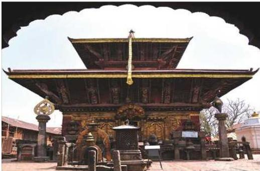
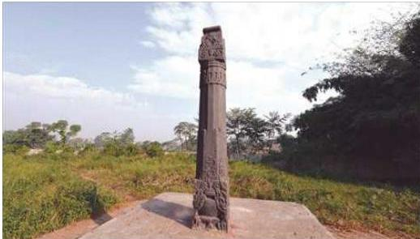
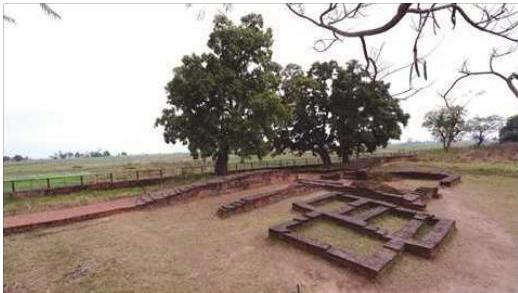
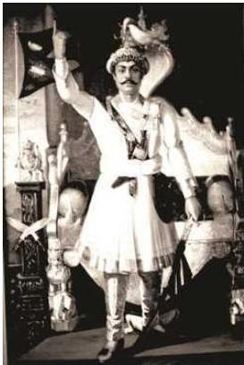
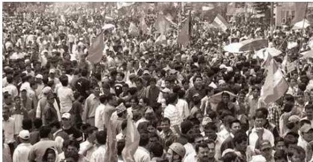
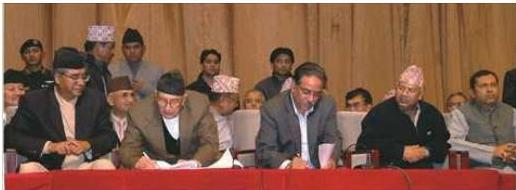

नेपालको सङ्कल्पित
शेतिहासिक रूपरेखा
२.१ नेपाल एक प्राचीन मुलुकको रूपमा
विभिन्न धर्मशास्त्र तथा पुराणहरूमा नेपाललाई अत्यन्तै प्राचीन भूमिको रूपमा वर्णन गरिएको छ। करिब १३ करोड वर्षअगाडि बनेका यहाँका पर्वतशृङ्खला र उपत्यकाहरूमा पछि आएर प्राणीहरूको आकर्षण विशेष रूपमा बढ्दै गएको पाइन्छ। पश्चिम नेपालको बुटवल क्षेत्रमा पाइएको रामापिथेक्स मानवको अवशेषले एक करोड वर्षभन्दा अगाडिदेखि नै नेपालमा मानवको बसोबास सुरु भइसकेको तथ्य स्पष्ट हुन्छ।
नेपाल नामको पहिलो उल्लेख अथर्व परिशिष्टमा गरिएको पाइन्छ। अथर्व परिशिष्टको समय निश्चित गर्न नसकिए तापनि इसापूर्व ५००-६०० को बीचमा यसको निर्माण भएको मानिन्छ। यसमा नेपाललाई कामरु, विदेह, उदुम्बर, अवन्ती र कैकय देशहरूसँगै राखी चर्चा गरिएको छ। मूल सर्वास्तिवा, विनयसङ्ग्रह नामको बौद्ध ग्रन्थमा पनि नेपालबारे चर्चा गरिएको छ। यसमा भगवान् बुद्धको समयमै उनका चेलाहरू व्यापारीहरूका साथ नेपाल पसेको घटना उल्लेख गरिएको छ। महाभारतको वन पर्वमा नेपाललाई विषय (जिल्ला)को रूपमा वर्णन गरिएको छ। जैन ग्रन्थको आवश्यक सूत्र तथा कौटिल्यको अर्थशास्त्र (इ.पू. चौथो शताब्दी) ले पनि नेपालको बारेमा उल्लेख गरेका छन्। त्यस्तै भारतीय गुप्त सम्राट समुद्र गुप्तले आफ्नो इलाहाबाद अभिलेखमा नेपालको उल्लेख ‘छिमेक राज्य’को रूपमा गरेका छन् भने त्यसपछिका प्राय: सबै श्रोतहरूले नेपालको उल्लेख स्वतन्त्र राज्यको रूपमा नै गरेका छन्। नेपालका शिलालेखहरूमा भने वि.सं. ५६९ को टिस्टुङ अभिलेखमा पहिलो पटक नेपाल शब्दको उल्लेख भएको छ। यसरी यो मुलुक अत्यन्तै प्राचीन समयदेखि नै ‘नेपाल’ नामबाट परिचित रहेको स्पष्ट हुन्छ। नेपाललाई सत्ययुगमा सत्यवती, त्रेतायुगमा तपोवन र द्वापरयुगमा मुक्तिसोपान भनिन्थ्यो र कलियुगमा नेपाल भन्ने गरिएको कुरा पौराणिक ग्रन्थहरूमा उल्लेख छ।
नेपाल परिच्छेद/७९
८०/नेपाल परिचय
२.२ नेपाल नामकरणको आधार
नेपाल नाम प्राचीनकालदेखि नै प्रचलित छ। लिच्छविकालमा विस्तारित यो नाम मल्लकालमा काठमाडौँ उपत्यका र वरिपरि मात्र सीमित रह्यो। एकीकरणपश्चात् काठमाडौँ राजधानी भयो र ‘नेपाल’ शब्दले आजको नेपाल राष्ट्रलाई नै बुभाउन थाल्यो।
नेपाल नामको बारेमा व्युत्पत्ति, विभिन्न भाषा, जाति, वंशावली र प्राचीन ग्रन्थहरूका आधारमा वर्णन गरिएको पाइन्छ।
२.२.१. भाषागत आधार
किराँती भाषा
‘नेपाल’ पौराणिक किराँती शब्द ‘नेपा’ को सांस्कृतिक रूप हो। ‘ने’ को अर्थ ‘मध्य’ र ‘पा’ को अर्थ ‘देश’ अर्थात् ‘मध्यदेश’ हुन्छ। मध्यपर्वतीय खण्डमा रहेको ‘नेपा’ मा पछि ‘ल’ प्रत्यय लागेर नेपाल नाम रहेको हो।
तिब्बती भाषा
तिब्बती भाषामा ‘ने’ को अर्थ घर र ‘पाल’ को अर्थ ऊन अर्थात् ऊन हुने ठाउँको रूपमा यो क्षेत्रलाई लिइएको पाइन्छ। यस क्षेत्रमा भेडापालन बढी भएकाले पाल अर्थात् पशम, परिमना (ऊन) प्रशस्त पाउनु स्वाभाविक हो। तिब्बतीहरू नेपाललाई ‘वल्वो’ र मजोलहरू ‘वल्पो’ भन्छन्। भोटनिवासीहरू हिमालपारिको यस भूभागलाई ‘पालदेश’ वा ‘वाल्पो’ पनि भन्छन्।
नेपाल भाषा
नेवारहरूले नेपाललाई ‘नेपा’ मात्र भन्ने गर्दथे, जो पछि नेपाल हुन गयो। ‘ने’ भनेको ‘मध्य’ र ‘पा’ भनेको ‘देश’ हो। हिमाली भागमा रहेकाले यो नाम सार्थक मानिन्छ। ‘नेपा’ शब्दमा ‘ल’ प्रत्यय लागी झ्याको झ्याल, पस:को पसल भएभै नेपाको नेपाल भएको अनुमान गरिएको छ।
लिम्बू भाषा
लिम्बू भाषामा नेपालको अर्थ समतल भूमि भन्ने हुन्छ। पहाडी खण्डमा अत्यन्त ठुलो मैदानी उपत्यका भएकाले यसको नाम नेपाल रहन गएको हो।
लेप्चा भाषा
पुरानो लेप्चा भाषामा ‘ने’ को अर्थ पवित्र र ‘पाल’ को अर्थ गुफा हुन्छ। यसरी ‘नेपाल’ले पुण्यभूमि वा धार्मिक स्थल बुभाउँछ। नेपालका तामाडहरूले पनि तीर्थलाई ‘ने’ भन्छन्। लामा धर्मग्रन्थमा ‘ने’ को अर्थ पवित्र स्थानको रूपमा लगाइन्छ। खोटाङमा ‘नेपा’ गाउँ छ।
नेपाल परिचय/८१
संस्कृत भाषा
नीप: (पर्वतपाद) शब्दमा उपसर्ग आल (स्थान) जोडेर नेपाल भएको अनुमान छ। हिमाल र पञ्चाल जस्तै नीप: (फेदी) र आलय: (निवास) बाट पर्वत फेदीको निवासका रूपमा नेपाल नाम रहेको भाषिक व्याख्या पनि गरिएको छ। यजुर्वेदमा प्रयुक्त वैदिक शब्दमा ‘नीप:’ को अर्थ उपत्यकानिवासी हुन्छ। नेपाल शब्दको मूल ‘नीप’ भनिन्छ। ‘नीप:’ भनेको अशोक (कदंब) वृक्ष पनि हो। संस्कृतमा शिवको शैव भएभैँ नेपालको नेपाल शब्द प्रयोग भएको भेटिन्छ। पारस्परिक आख्यानमा भाषागत शाब्दिक सान्निध्य र ध्वन्यात्मक सङ्गति देखिए तापनि उपर्युक्त सन्धि शब्दार्थ ठोस र प्रमाणित चाहिँ भएका छैनन्।
तामाङ भाषा
तामाङ जातिका एक महापुरुष तिब्बतसँग व्यापार गर्दथे। यी तामाङ लामाकै नाइके बने। तामाङ लामा बोलीमा ‘ने’ भनेको स्तन हो। पृथ्वीको स्तनस्वरूप पर्वतबाट पालित नेपालबाट व्यापार गर्ने महापुरुष पर्वतकै नाममा चिनिए र पर्वतको नामबाट नै नेपाल भनियो।
२.२.२ जातिगत आधार
(क) नेपाल महात्म्यअनुसार ‘ने’ नामको निप जाति र न्याबार जातिका ऋषिले यहाँका जनताको लालनपालन गरेकाले यस देशको नाम नेपाल रहन गएको मानिन्छ।
(ख) दक्षिण भारतको कर्नाटक (केरला) क्षेत्रमा बस्ने नेवार जाति सिम्मौनगढका संस्थापक नान्यदेवको साथ यहाँ आएका थिए। नेपालका प्राचीन शासक गोपालवंशीहरूलाई ‘निप’ भनिन्थ्यो। उनीहरूको आलय (घर) लाई नेपाल भनियो। ‘नीप’ शब्दको उल्लेख वैदिक ग्रन्थमा र पाणिनिको अष्टाध्यायीमा समेत भएको पाइन्छ।
(ग) भोटमा नेपाललाई Balyal अथवा वाल्पो भनिन्थ्यो भने चिनियाँ यात्रीले निः-पो-लो भन्ने गर्थे। किराँतहरूको प्रमुख बस्ती भएकाले बौद्ध धर्मग्रन्थहरूमा यहाँको नाम नेवाल र अङ्ग्रेजीमा NIPAUL, NEPAUL, NIPAL र NEPAL शब्दका साथै भारतीयहरूद्वारा नेपाल शब्दको प्रयोग हुने गरेको छ।
यस्ता विविध आधार र मान्यता भए तापनि वास्तवमा नेपाल नाम यसै कारणले हुन गएको भनी किटान गर्न भने सकिएको छैन। तथापि मौलिक सभ्यता, संस्कृति र कलाले गर्दा नेपालको स्वतन्त्र र अविच्छिन्न स्वरूप भने कायम रहेको कुरामा भने मतान्तर छैन।
२.३ नेपाल उपत्यकाको उत्पत्ति
लिच्छविकालभन्दा अघिको प्राचीन इतिहास भरपर्दो स्रोतहरूको अभावमा स्पष्ट हुन सकेको छैन। वंशावली र पुराणहरूका आधारमा मात्र यस युगको इतिहास अध्ययन गर्न सकिन्छ। ती ग्रन्थहरूमा भने नेपाल उपत्यका उत्पत्तिको सम्बन्धमा अनेक रोचक कथाहरूको वर्णन गरिएको छ। यस्ता स्रोतहरूले उल्लेख गरेअनुसार प्राचीन समयमा काठमाडौँ उपत्यका घना जङलले ढाकिएको थियो र यसको बीच भागमा विशाल
सरोवर थियो । सो सरोवरमा नागहरूको निवास भएकाले यसलाई नागदह भनिन्थ्यो । यहाँ वेलाबखतमा विपश्वी बुद्ध, शिखी बुद्ध, विश्वभू बुद्ध, मञ्जुश्री बोधिसत्व, ऋकुच्छन्द बुद्धजस्ता विभिन्न तपस्वीहरू आउने जाने गर्दथे ।
विपश्वी बुद्ध
वंशावली र पौराणिक स्रोतअनुसार नेपाल उपत्यकामा आउने प्रथम महात्मा विपश्वी बुद्ध थिए । यिनी आफ्नो स्थायी निवास बन्धुमती नगरबाट सत्ययुगमा नै आएको विश्वास गरिन्छ । यहाँ आएर उनी नागार्जुन पर्वतमा बसे र केही समयपछि चैत्र शुक्ल पूर्णिमाको दिन नागदहको बीचमा कमल फूलको बीज रोपे । त्यसको सम्भन्नामा हिजोआज पनि चैत्र शुक्ल पूर्णिमाका दिन नागार्जुन पर्वतमा मेला लाग्दछ र यो विपश्वी बुद्धकै सम्भन्नामा लागेको मेला हो भन्ने विश्वास गरिन्छ ।
शिखी बुद्ध
विपश्वी बुद्धले रोपेको बीजबाट ६ महिनापछि आश्विन शुक्ल पूर्णिमाको दिन एक अलौकिक फूल उत्पन्न भयो र त्यस फूलको बीच भागमा ज्योतिर्मय भगवान् स्वयम्भू प्रकट भए । यसरी मत्यलोकमा स्वयम्भू भगवान्को आगमनको खबर सुनेर अरुणपुरका शिखी बुद्ध यहाँ आएर स्वयम्भूको आराधना गर्दागर्दै केही कालपछि भगवान्मा नै मिल्न गए । उनी आएर बसेको पर्वतलाई धिनोच्च गिरि भनिन्छ । हरेक माघ १ गते त्यहाँ लाग्ने मेलालाई शिखी बुद्धको संस्मरणमा लगाइएको मेला मान्ने चलन छ ।
विश्वभू बुद्ध
यिनी त्रेतायुगमा यहाँ आएका थिए । नेपाल उपत्यकामा आएर धेरै फूल भएको पर्वत छानेर आफ्नो आश्रम बनाई बसे । उनी बसेको पहाड फुलोच्च गिरिको नामले प्रसिद्ध भयो । यिनले नै पहिलोपल्ट उपत्यकाको पानी बाहिर जाने मार्गको बारेमा आफ्ना चेलाहरूलाई अवगत गराएका थिए ।
मञ्जुश्री बोधिसत्व
विश्वभू बुद्ध फर्केको केही वर्षपछि त्रेतायुगमा नै चीनबाट मञ्जुश्री बोधिसत्वको यहाँ आगमन भयो । यी मञ्जुश्री बोधिसत्वको बारेमा वंशावलीहरूले थुप्रै वर्णन गरेका छन् । उनले यहाँ आएर स्वयम्भूको दर्शन पाएपछि उपत्यकाको पानी बाहिर पठाउने विचार गरे । सरोवरको सम्पूर्ण भौगोलिक अध्ययन गरेर उनले कटुवाल नामक स्थानमा उपत्यकाको पानी जाने बाटो बनाई स्वयम्भूदेखि गुह्येश्वरीसम्मको एक विशाल सहरको निर्माण गराए । त्यसपछि उनले धर्माकर नामक व्यक्तिलाई नेपालको पहिलो राजा बनाए । मञ्जुश्री फर्केपछि उनका चेलाहरूले यस सहरको नाम नै मञ्जुपत्तन राखे । मञ्जुश्रीको नाममा हिजोआज श्रीपञ्चमीको दिन स्वयम्भूमा चैत्य मेला लाग्छ ।
ऋकुच्छन्द बुद्ध
मञ्जुश्री बोधिसत्व फित्ता भएपछि ऋकुच्छन्द बुद्ध स्वयम्भू ज्योतिको दर्शनार्थ यहाँ आए ।
८२/नेपाल परिचय
उनी यहाँ आएको वेला काठमाडौँमा पानीको अभाव देखेर गुह्येश्वरीसँग प्रार्थना गरे । सो प्रार्थना सुनेर गुह्येश्वरीले शिवपुरीबाट बागमती पैदा गरिन् भनेर वंशावलीहरूले उल्लेख गरेको पाइन्छ । यी बुद्धले नेपालका राजा धर्माकार निःसन्तान भएकाले उनीपछि धर्मपाललाई यहाँको राजा बनाएको कुरा पनि वंशावलीमा उल्लिखित छ ।
राजा धर्मपालपछि उनकै वंशज सुधन्त्राले त्रेतायुगको अन्तसम्म नेपाल उपत्यकामा शासन गरे । उनी सीताको स्वयंवरमा जनकपुर जाँदा जनकका भाइ कुशध्वजद्वारा मारिएको कथा वंशावलीमा वर्णित छ । त्यसपछि केही समय नेपाल मिथिलाको नियन्त्रणमा रह्यो ।
द्वापरयुगको अन्ततिर गौड देशका राजा प्रचण्डदेव स्वयम्भू र गुह्येश्वरीको दर्शनार्थ नेपाल आएको वेलामा स्वयम्भूको समीपमा वसुपुर, अग्निपुर, वायुपुर, नागपुर र शान्तिपुर नामका पाँच कुटीको निर्माण गरेको तथा कलियुग आएको थाहा पाई कलियुगी मानव स्वयम्भू ज्योतिको दर्शन गर्न असमर्थ रहने छन् भन्ने विश्वासमा उनले स्वयम्भू ज्योतिलाई पत्थरले ढाकी त्यसमाथि एक चैत्य खडा गरेको कथा वंशावलीमा उल्लेख छ । सो समयमा उपत्यकाको राजगद्दी खाली भएको हुँदा उनै प्रचण्डदेवका छोरा शक्तिदेवले यहाँ आफ्नो नियन्त्रण कायम गरे । वंशावलीहरूमा उनीपछि गुणकामदेव, शक्तिदेव तथा सिंहल आदिले यहाँको राजपाट सम्हालेको कुरा उल्लेख गरिएको छ ।
२.४ प्राचीन नेपाल
नेपालको प्राचीन इतिहास इसापूर्व हजारौँ वर्ष अगाडिदेखि नै सुरु भएको मानिए तापनि इस्वी संवत्को थालनीअधिसम्म नेपालको इतिहास स्पष्ट छैन । किराँतकालपूर्वका ठोस ऐतिहासिक सामग्री प्राप्त हुन सकेका छैनन् । यस कालको राजनीतिक, आर्थिक, सामाजिक आदि कुराको बारेमा लिच्छविकालीन अभिलेखहरूबाट केही भलक पाइन्छ । इस्वी संवत्को थालनीका साथै लिच्छविकाल सुरु भए पनि प्रमाणहरूका आधारमा इस्वीको पाँचौँ शताब्दीदेखि मात्र प्राचीन नेपालको इतिहास बढी विश्वासिलो बनेको पाइन्छ ।
२.४.१ गोपालवंशी शासकहरू
नेपालका प्रथम राजाहरू गोपालवंशी थिए । गोपाल भन्नाले गाईपालक समुदाय भन्ने बुभिन्छ । काठमाडौँको पानी बाहिर फ्याँकेपछि उपत्यका बसोबासयोग्य भयो । त्यसपछि दक्षिणतर्फका नीप जातिका गोपालहरू यहाँ आकर्षित भए । दक्षिणबाट आएका गोपालहरू र यहाँका प्राचीन नाग जातिबीच भिडन्त हुँदा नाग जातिहरू पराजित भई दक्षिण भेगतर्फ लागे भने नेपाल उपत्यकामा गोपालहरूको वर्चस्व कायम भयो । वंशावलीहरूमा उल्लेखित कथाअनुसार यिनीहरूको एउटा बहुञ्जी नाम गरेको गाईले सधैं बागमतीको तीरको एक ठाउँमा गएर दूध चढाउने गर्दथिन् । सो स्थल खनी हेर्दा पशुपतिको ज्योतिर्लिङ उत्पन्न भयो । टेकु दोभानमा तपस्या गरी बस्ने ‘ने’ मुनीले गोपालवंशका भुक्तमान (भूमिगुप्त) लाई राजा बनाए । यिनी गोपाल वंशका संस्थापक प्रथम राजा भए । गोपाल वंशावलीका
नेपाल परिचय/८२
अनुसार गोपालवंशी आठ जना शासकहरू (भूमिगुप्त, जयगुप्त, धर्मगुप्त, हर्षगुप्त, भीमगुप्त, मणिगुप्त, विष्णुगुप्त र जितगुप्त) ले करिब ५०५ वर्ष (कर्क पेट्रिक वंशावलीमा ४९१ र राइट वंशावलीमा ५२१ वर्ष) शासन गरे भन्ने उल्लेख छ ।
२.४.२ महिषपालवंशी राजाहरू
गोपालवंशका जितगुप्तलाई युद्धमा पराजित गरी महिषपालहरूले नेपालको शासनमा नियन्त्रण कायम गरेको कुरा गोपाल राजवंशावलीमा उल्लेख छ । केही इतिहासकारहरूका अनुसार गाई पाल्लेलाई गोपाल भनेभै भैँसी पाल्लेलाई महिषपाल वा आभीर भनिन्थ्यो । तर गोपाल र आभीर एउटै वंशका भएका र पेसागत आधारमा मात्र दुई समुदायमा विभाजित भएको मानिन्छ । कर्कप्याट्रिकको वंशावलीमा आभीरहरू राजपुत उत्पत्तिका ग्वाला भएका र सिम्ब्रौनगढ र जनकपुरबीचको समतल भूमिमा आफूसँग हातहतियारसमेत राखी ठुलो सङ्ख्यामा भैँसी पाल्ले गरेकोमा पछि उपत्यका प्रवेश गरी गोपालवंशी राजालाई हराई शासनमा नियन्त्रण कायम गरेको भनी उल्लेख गरिएको छ । यस वंशका प्रथम राजा वरसिंह हुन् । गोपाल वंशावलीअनुसार यस वंशका तीन शासकहरू वरसिंह, जयसिंह र भूवनसिंहले क्रमश: ४९ वर्ष, ७१ वर्ष २ महिना र ४१ वर्ष गरी जम्मा १६१ वर्ष २ महिना शासन गरेका थिए ।
२.४.३ किरौंतवंशी राजाहरू
नेपाल उपत्यकामा राज्य गर्ने लिच्छवि राजवंशभन्दा अगाडि र महिषपाल वा आभीर वंशभन्दा पछाडि बीचको समयमा किरौंतवंशीय राजखलकको शासन उपत्यकामा रहेको थियो भन्ने विवरण साहित्यिक स्रोतहरूमा फेला पर्दछ । गोपाल वंशावलीमा किरौंत राजाहरूको सूचीका साथै उनीहरूको मूल स्थान तामाकोशी र सुनकोशीबीचको भूभाग भनी बताइएको छ ।
आभीर वंशका अन्तिम राजा भूवनसिंहलाई युद्धमा पराजित गरी किरौंतवंशी राजा यलुङ वा यलम्बरले शासनमा नियन्त्रण कायम गरेका थिए । यो द्वापरयुगको अन्त्य वा कलियुगको प्रारम्भतिर छैटौँ शताब्दीमा घटेको घटना मानिन्छ । नेपालमा ऐतिहासिक घटनाक्रमको सुरुवात किरौंती राजाहरूबाटै भएको मानिन्छ । गोपाल राजवंशावलीमा ३२, भाषा वंशावलीमा २७ र राइट वंशावलीमा २९ राजाहरूको वर्णन गरेको पाइन्छ । राइट वंशावलीअनुसार किरौंत वंशका २९ पुस्ताका राजाहरूले शासन चलाएको उल्लेख छ । किरौंतवंशी मुख्य राजाहरूको नामावली निम्नबमोजिम छ :
यलम्बर
किरौंत राज्यका संस्थापक यलम्बर ज्यादै वीर थिए । यिनले महिषपाल आभीर वंशका शासक भूवनसिंहलाई हराएर किरौंत राज्यव्यवस्था स्थापना गरेका थिए । यिनलाई कतैकतै यलुङ पनि भनिएको छ । यिनकै नामबाट पाटन सहरको पुरानो नाम यल रहन गएको मानिन्छ ।
८४/नेपाल परिचय
नेपाल परिचय/८५
हुमति
यिनी छैटौँ किराँती राजा थिए। यिनलाई गोपाल राजवंशावलीमा हँति भनेर उल्लेख गरिएको छ। डेनियल राइटले छपाएको वंशावलीले यिनलाई महाभारतको युद्धकालका भनी उल्लेख गरेको छ।
जितेदास्ती
किराँत राजा जितेदास्ती अर्का उल्लेखनीय शासक हुन्। यिनलाई भाषा वंशावलीहरूले सातौँ क्रममा राखेका छन् भने गोपाल राजवंशावलीले केही पछिल्लो क्रममा उल्लेख गरेको छ। यिनको समयमा गौतम बुद्ध काठमाडौँ आएको चर्चा वंशावलीमा गरिएको छ।
स्थुको
केही वंशावलीहरूले किराँत राजा स्थुकोका समयमा मौर्य सम्राट अशोक छोरी चारुमतीका साथ काठमाडौँ आएका थिए। यिनले चार स्तूप बनाए। छोरी चारुमतीको विवाह क्षेत्रीय कुमार देवपालसँग गरिदिएका थिए। तर वंशावलीको भनाइ सत्य देखिँदैन। अशोक लुम्बिनी, कपिलवस्तुमा मात्र आएका थिए। काठमाडौँ उपत्यकामा आएको कुरा भने प्रमाणित छैन।
२.४.४ लिच्छवि काल
लिच्छवि शासनको स्थापना
किराँतहरूपछि लिच्छवि वंशका राजाहरूले नेपालमा शासन सञ्चालन गरेको पाइन्छ। वंशावली एवम् पुराणहरूमा सूर्यवंशी क्षेत्रीयहरूले किराँतहरूलाई जितेर नयाँ शासन व्यवस्था कायम गरेको पाइन्छ। गोपाल राजवंशावलीमा ‘अनि सूर्यवंशको प्रभावले नेपालमा किराँत राजालाई जितेर लिच्छवि राजवंश चल्यो’ भनी लेखिएको छ भने पशुपति पुराणमा पनि ‘किराँतहरूलाई बोलिवचनले विश्वासमा पारेर तथा युद्धमा परास्त गरेर वैशालीका स्वामी वा पितहरूले आफ्नो शासनसत्ता कायम गरेको’ भन्ने उल्लेख छ। यसै प्रकारको सन्दर्भ हिमवत्खण्डमा पनि पाइन्छ। जसमा वैशालीका स्वामीहरूले किराँतहरूलाई जितेर नेपालमा शासन सुरु गरेको उल्लेख छ। यस प्रकार नेपालमा लिच्छवि शासन व्यवस्थाको थालनी किराँतीहरूको शासनपछि लगत्तै सुरु भएको देखा पर्दछ। गोपाल वंशावलीअनुसार अन्तिम किराँती राजा ‘खिगु’, भाषा वंशावलीअनुसार ‘गालिज’, राइट वंशावलीअनुसार किराँत राजा ‘गस्ति’ लाई परास्त गरेर वा धपाएर लिच्छवि राजवंशले नेपालमा शासन सुरु गरेको देखिन्छ।
लिच्छवि राजवंशको थालनी कुन समयदेखि भयो, यसबारे यकिन गर्न सकिएको छैन। इतिहासविद् बाबुराम आचार्यका अनुसार यहाँको किराँत राज्यलाई भइँग गरी आफ्नो स्वतन्त्र लिच्छवि राज्य स्थापना गर्न समर्थ भएको देखिन्छ। लिच्छविहरू नेपालमा आउनुभन्दा अगाडि भारतको वैशाली हालको मुजफ्फरपुर प्रतिकलाको बसाढ भन्ने स्वतन्त्र गणतन्त्रात्मक शासन प्रणालीअनुसार शासन चलाउने गर्दथे। त्यो भागमा राजतन्त्रात्मक

चौगुनारायण मन्दिर, भक्तपुर
शासन प्रणाली सुदृढ हुँदै गएको र राजा अजातशत्रुबाट पराजित भई इसाको प्रथम शताब्दीतिर शरणार्थीका रूपमा लिच्छविहरू नेपाल प्रवेश गरेका थिए। वैशालीमा शासन चलाएका लिच्छविहरूले यहाँका भुरे, टाकुरे, सामन्त राजाहरूलाई हराई शासनमा कब्जा गर्ने महत्वाकाङ्क्षा प्रदर्शन गरे। तर लिच्छविहरूको सत्तामा कब्जा त्यति सरल र सहज नभई ठुलो सङ्घर्ष र रक्तपातपूर्ण घटनाबाट मात्र सम्भव भएको थियो। तत्कालीन शासक वर्गप्रति जनताको तीव्र असन्तोष व्याप्त भएको वेलामा जनभावनाको अनुकूल लिच्छविहरूले जनसङ्घर्षको नेतृत्व गरेका थिए। किराँतहरू युद्धमा हारेर पूर्वी भेगमा विस्थापित हुन बाध्य भए भने केन्द्रमा लिच्छविहरूको राज्यसत्ता कायम हुन पुग्यो। जनहितलाई बढी स्थान दिने शासनव्यवस्था, सङ्गठित जनजीवन, उन्नत आर्थिक अवस्था, शिक्षाको स्तर, आकर्षक कला आदि कुराले गर्दा लिच्छविकाललाई नेपालको इतिहासमा स्वर्णयुग पनि मानिएको छ। हुन पनि तुलनात्मक दृष्टिले हेर्ने हो भने यो युग सर्वांगीण विकासको युगको रूपमा रहेको छ।
लिच्छवि शासनकालअन्तर्गत फेला परेको पहिलो प्रमाणित अभिलेख राजा मानदेवको सन् ४६४ को चौगुको अभिलेख हो, जसमा मानदेवभन्दा अगाडिका तीन पुस्ताको विवरण दिइएको छ। यसबाहेक लिच्छवि वंशका आठौँ शताब्दीतिरका राजा जयदेव द्वितीयको पशुपति अभिलेखमा लिच्छवि राजाहरूको सुरुदेखिकै वंशावली लेखिएको छ। तर यस वंशावलीमा लिच्छवि राजाहरूको नामको सङ्गा क्रमाङ्क्ष मात्र लेखिएको पाइन्छ।
प्रसिद्ध लिच्छविकालीन शासकहरू
लिच्छविहरू मूलतः सूर्यवंशी मानिन्छन्। अयोध्याका सूर्यवंशी राजा दशरथका आठौँ
८६/नेपाल परिचय
पुस्तामा लिच्छवि भन्ने व्यक्ति भएको मानिन्छ । लिच्छवि वंशमा सुपुष्प नामका राजा भए, जसलाई लिच्छवि राजवंशका संस्थापक र आदिपुरुष पनि मानिन्छ ।
सुपुष्प
जयदेव द्वितीयको पशुपति अभिलेखमा उत्कीर्ण वंशावलीमा लिच्छवि नाम गरेका राजापछि तेह्रौं पुस्तामा कामदेवजस्ता राम्रो रूपरज भएका राजा सुपुष्प भए भनिएको छ । कतिपयले राजा सुपुष्पलाई नै नेपालका प्रथम लिच्छवि राजाको रूपमा मान्ने गरेको पाइन्छ । वंशावलीहरूमा भने सुपुष्पलाई चौथो लिच्छवि राजाको रूपमा देखाइएको छ, साथै गोपाल राजवंशावलीमा यिनलाई सुपुष्पदेव, भाषा वंशावलीमा पशुपुष्पवर्मा र राइट वंशावलीमा पशुप्रेखदेव भनेर नामकरण गरिएको छ । गोपाल राजवंशावलीअनुसार यिनले नेपालमा वर्णव्यवस्था कायम गर्नुका साथै पशुपतिको देवल बनाउने, त्यसमा छाना हाल्ने, सहरलाई सुन्दर बनाउने, राज्यमा मर्यादा कायम गर्ने तथा न्यायपूर्वक प्रजाहरूको पालन गर्ने काम गरेका थिए । यसबाहेक राइट वंशावलीमा यी राजाले पशुपति मन्दिरमा सुनको छाना हाल्नुका साथै गजुरसमेत थपेर अम्लो र भव्य तुल्याएको उल्लेख छ । यसैगरी राजा सुपुष्पले भूमि वा जग्गासम्बन्धी मर्यादा बाँधेको कुराको उल्लेख गोपाल राजवंशावलीमै पाइन्छ ।
मानदेव
शासन सञ्चालनमा कुशल मानदेव प्रथमको शासन कालमा आएर नेपाल राज्य अभ्र व्यवस्थित, विकसित र बलियो बन्यो । शास्त्र जान्ने, जनतालाई आफ्नै परिवार ठान्नेजस्ता राजगुणहरूले युक्त यी राजाले राज्यमा आर्थिक उन्नति र शान्ति व्यवस्थाद्वारा ४१ वर्ष (वि.सं. ५२१-५६२, इ.सं. ४६४-५०५) सम्म आफ्नो शासनमा स्थिरता कायम गरे । आफ्नो राज्यमा मुद्राको व्यवस्थाका अतिरिक्त कला र विद्या क्षेत्रको समेत विकास गरे । प्रथम राजदरबार मानगृहजस्तो भव्य भवन ‘श्री मानांक’ र ‘श्री भोगिनी’ अङ्किक्त मुद्रा यिनकै कालमा तयार भएको थियो । यिनकै समयदेखि प्राचीन नेपालको इतिहास पनि बढी स्पष्ट र भरपर्दो भएकाले प्रथम प्रामाणिक राजा यिनैलाई मानिन्छ । यिनको राज्य पूर्वमा कोशी, पश्चिममा गण्डकी (कालीगण्डकीपारि मल्लपुरी) र उत्तरमा हिमालयसम्म फैलिएको थियो । अभिलेख र स्वतन्त्र टक आदि प्रामाणिक कुराहरू मानदेवको पालादेखि पाइएका छन् । यसरी विक्रमको छैटौं शताब्दीदेखि नेपालको प्रामाणिक इतिहास प्रारम्भ भएको पाइन्छ ।
मानदेवपछि महिदेव, वसन्तदेव आदि राजा भए । वसन्तदेव बालककालमै राजा भएकाले मन्त्रीहरू रविगुप्त र क्रमलील शक्तिशाली भए । संयुक्त शासन र फेरबदल छिटो भएकाले इ.सं. ५३६ देखि ५४५ सम्म राजनीतिक अस्थिरता व्याप्त भएको पाइन्छ । यसपछि भौमगुप्त र भारदारहरूबीच शक्तिसङ्घर्षजस्तै भयो । शिवदेवले आफ्नो भानिज अंशुवर्माको मद्दतबाट गुप्त प्रभाव बचाए पनि अंशुवर्माको प्रभुत्व बढेर शिवदेव निस्तेज बन्न पुगे । फलस्वरूप अंशुवर्मा राजा भए । मन्त्रीले राज्याधिकार लिएको यो पहिलो घटना थियो ।
नेपाल परिचय/८७
८८/नेपाल परिचय
अंशुवर्मा
अंशुवर्माको शासनकाल (इ.सं. ६०५-६२१)मा नेपालमा खेती, पशुपालन र व्यापार मात्र हैन, परराष्ट्र सम्बन्ध र रक्षा व्यवस्था जस्ता चौतर्फी विकासका कार्यहरू भए। उनले कैलाशकुट दरबार अत्यन्त कलात्मक, भव्य र प्रशंसनीय तवरले तयार गराएका थिए। परराष्ट्र नीति (तिब्बत र चीनसँग) उनकै समयमा सफलतापूर्वक सञ्चालित भयो। उनको समयमा भारतमा हर्षवर्धन र तिब्बतमा स्रोङचङ्गम्पोले शक्तिशाली साम्राज्य खडा गरेका हुनाले तिब्बतसँग उनले सौठगाँठ गरेका थिए।
तिब्बती राजा स्रोङचङ्गम्पोसँग उनले राजकुमारी भूकुटी (चिजु)को विवाह गराएको कुरा चर्चित छ। उनको समयमा प्रजाले धार्मिक उदारता तथा स्वायत्त शासनसमेत प्राप्त गरेका थिए। उनको समयमा कला तथा विद्याको समेत विकास भई जनजीवन सुसङ्गठित र उन्नत हुँदै गएको थियो। यी सब उन्नति प्रगतिको कारणबाट नेपालको इतिहासमा उनी नै सर्वप्रथम ‘महाराजाधिराज’ उपाधिप्राप्त शासक बन्न पुगे। विधिवत् युवराज घोषणा गर्ने चलन पनि सर्वप्रथम यिनकै समयदेखि चल्यो। हिन्दु राजाको रूपमा उनले ‘पशुपतिपादानुगृहित’ उपाधिसमेत धारण गरेका थिए। ‘प्रजाहित समाधानतत्पर’ तथा ‘कथ्य प्रजामे सुखिना भवेत्’ जस्ता विशेषतायुक्त यिनले ‘शब्दविद्या’ (व्याकरण) पनि तयार गरेको बुभिन्छ। वि.सं. ६७८ तिर उनको मृत्यु भयो।
उदयदेव
अंशुवर्मापछि उदयदेव राजा भए। सामन्त भौमगुप्तका छोरा जिष्णुगुप्त र उनको भाइले गरेको षड्यन्त्रका कारण उदयदेव पदच्यूत भई तिब्बतमा शरण लिन पुगे। उनका छोरा नरेन्द्रदेवले पछि नेपालको राज्यसत्ता कब्जा गरे।
नरेन्द्रदेव
शासन सञ्चालनमा कुशल नरेन्द्रदेवको कार्यकालमा इस्वीको सातौँ शताब्दीको मध्यम (इ.सं. ६४५-६७९) ताका भोट (तिब्बत र चीन)सँग व्यापारिक सम्बन्ध स्थापना हुनुका अतिरिक्त नेपालका पूर्व र पश्चिम भेगका व्यापारिक बस्ती (द्रष्ट) हरूको प्रारम्भ हुन गई नेपाल केही समयसम्म अन्तर्राष्ट्रिय व्यापारिक केन्द्र बन्यो। नरेन्द्रदेवले महाराजाधिराजको पदवी लिए र ‘परम भट्टरक’ को प्रसिद्ध पनि पाएका थिए। उनले भद्राधिवास राजदरबार पनि बनाए। उनको आसनमा सिंहको आकृति भएकाले सिंहासन प्रचलित भएको बुभिन्छ।
जयदेव द्वितीय
जयदेव द्वितीय (इ.सं. ७१३-७२३) कवि हुनुका अतिरिक्त मुलुक विस्तार गर्ने महात्त्वाकाङ्क्षीसमेत भएकाले लिच्छवि शासकहरूमा उनको क्रियाकलाप पनि उल्लेखनीय रहेको छ। उनी कविराजाका अतिरिक्त ‘परचक्रकाम’ (अर्काको देश जित्ने अभिलाषा) जस्तो उपनामले विभूषित थिए। उनको कविता पशुपति शिलालेखमा अङ्कित छ।
लिच्छविकालका प्रमुख राजाहरू यस प्रकार थिए :
सुपुष्प, जयदेव प्रथम, हरिदत्त वर्मा, वृषदेव, शंकरदेव, धर्मदेव, मानदेव प्रथम, महिदेव, वसन्तदेव, उदयदेव, मानदेव द्वितीय, शिवदेव प्रथम, अंशुवर्मा, नरेन्द्रदेव, जयदेव द्वितीय, शिवदेव द्वितीय, जयदेव तृतीय ।
२.४.५ पूर्वमध्य काल
जयदेव द्वितीयको शासनकालपछि उनका उत्तराधिकारीको रूपमा रहेका (अभिलेखमा उत्तराधिकारी भनी किटिएका) विजयदेवको शासन पनि नेपालमा निश्चित रूपले चलेको भने पाइन्छ । विजयदेवपछिका शासकहरूको बारेमा सर्वसाधारणद्वारा राखिएका अभिलेख, हस्तलिखित ग्रन्थ, वंशावलीअनुसार गुणकामदेव, मानदेव तृतीय, बलीराज, बलदेव, मानदेव चतुर्थ (८७७ ई.) राजा भए । त्यसपछि ८७९ मा राघवदेव राजा भए । उनी मध्यकालका प्रथम शासक थिए ।
गुणकामदेव
इ.सं. ९८७ र ९९० सम्मका दुईओटा अभिलेखमा गुणकामदेवले काठमाडौँ उपत्यकामा शासन गरेको उल्लेख छ । इतिहासकार कर्कपाट्रिकका अनुसार यिनको शासनकाल १८ वर्ष रहेको थियो । यिनले उमामहेश्वरको मूर्ति स्थापना गर्नुका साथै पशुपतिनाथ मन्दिर परिसरमा रहेको ईशानेश्वर मन्दिरमा तामाको छाना, सतल तथा सुन्धारा बनाएका थिए । यिनले काष्ठमण्डप, मरुसतल र मरुहिटीसमेतको निर्माण गरेका थिए ।
२.४.६ सिम्मौनगढको कर्णाटक राज्य
सिम्मौनगढ मधेश प्रदेशको साबिक बारा जिल्लामा पर्दछ । यसको प्राचीन नाम सिमरा-वनगढ थियो । त्यस वेला ठुला बस्ती भएका सबै क्षेत्रहरू सुरक्षाको हिसाबले गढ (किल्ला)को रूपमा परिणत गरिएका हुन्थे । यस्ता किल्लाहरू जङलको बीचमा समेत बनेका हुन्थे । वनभित्र बनेको गढलाई ‘वनगढ’ वा ‘वनदुर्ग’ भनिन्थ्यो । जुन ठाउँको वनमा सो गढ बनेको हुन्थ्यो, त्यही नाम विशेष प्रचलित हुन्थ्यो । सिमराको वनमा रहेको गढरूपको बस्ती भएकाले नै ‘सिमरा-वनगढ’ भनिएको हो । यही शब्द पछि अपभ्रंश भई सिम्मौनगढ भएको हो । सिम्मौनगढवरपरको सम्पूर्ण क्षेत्र त्यसवेला तिरहुतको नामले प्रसिद्ध थियो । काठमाडौँ उपत्यकाका तात्कालिक प्रमाणहरूमा भने यो क्षेत्रलाई ‘डोयराज्य’ भनिएको पाइन्छ । डोयको अर्थ तल्लो जातका मानिसहरूको बस्ती भन्ने बुझिन्छ । पश्चिमको खस राज्यको स्थापना भएताका नै दक्षिण र पूर्वी तराई भेग समेटेर कर्णाटक वंशको डोय (तिरहुते) राज्य खडा भएको पाइन्छ । यसको राजधानी सिम्मौनगढ (सिमरा वनगढ) अर्थात् सिमरामा थियो । तिरहुतमा कर्णाटक राज्य नान्यदेवले वि.सं. ११५४ (इ.सं.१०९७) मा स्थापना गरेका थिए । यो स्वतन्त्र राज्यको अस्तित्व करिब २२९ वर्ष जति रह्यो र इ.सं. १३२६ मा विघटन हुन गयो । यस राज्यमा शासन गर्ने प्रमुख शासकहरू नान्यदेव र हरिसिंहदेव थिए ।
नेपाल परिचय/८९

सिम्मौनगढमा रहेको स्तम्भ, बारा
नान्यदेव दक्षिणी भारतको कर्णाटक क्षेत्रका निवासी थिए । यिनी दक्षिणी भारतका चालुक्य शासकका विक्रमादित्य छैटौँका सेनापति थिए । विक्रमादित्य छैटौँले उत्तरी भारततर्फ विजय अभियान चलाउँदा न्यायदेव यसतर्फ आएका थिए । पछि यिनी आफैँले सिम्मौनगढलाई केन्द्र बनाई यस क्षेत्रमा राज्य स्थापना गरेको पाइन्छ । नान्यदेवपछि क्रमशः गङ्गादेव, नरसिंहदेव, रामसिंहदेव, शक्तिसिंहदेव, भूपालसिंहदेव र हरिसिंहदेव आदि शासकहरूले सिम्मौनगढमा शासन गरे । हरिसिंहदेव कर्णाटक वंशका अन्तिम शासक हुन् । यिनको शासनकालमा दिल्लीका मुसलमान बादशाह गयासुद्दिन तुगलकले आक्रमण गरेर सो राज्य ध्वस्त पारेका थिए ।
उपत्यकाका मल्ल राजाहरूको कुलदेवीका रूपमा पूजा गरिने तुलजा भवानी वास्तवमा कर्णाट राजाहरूकै कुलदेवी हुन् । हरिसिंहदेवकी रानी देवलदेवी शरणार्थीको रूपमा उपत्यका पस्दा आफूसित तुलजा भवानीको कलश पनि लिएर आएकी थिइन् । देवलदेवी र उनका छोरा जगतसिंहको उपत्यका प्रवेशपछि कर्णाटकको प्रभाव उपत्यकामा परेको थियो, जुन स्वाभाविक नै थियो ।
हरिसिंहदेवको मृत्यु दोलखामा भएताका उपत्यकामा रुद्र मल्ल र अरि मल्लको संयुक्त शासन चलिरहेको थियो । अरि मल्ल नाम मात्रका शासक थिए । रुद्र मल्लले हरिसिंहदेवको मृत्युपछि उनकी रानी देवलदेवी र छोरा जगतसिंहलाई आफ्नो दरबारमा शरण दिएका थिए । देवलदेवीले आफ्नो साथमा ल्याएका तलेजु भवानीको कलश दरबारमा स्थापित गरिन् । पछि नेपालका शासकहरू पनि तलेजुका उपासक बने । देवलदेवीका छोरा कुमार जगतसिंहको विवाह मल्ल राजकुमारी नायकदेवीसँग सम्पन्न भयो र यस जोडीबाट राजल्लदेवीको जन्म भयो । यिनै राजल्लदेवीसँग जयस्थिति मल्लको विवाह भएको थियो ।
९०/नेपाल परिचय
नेपाल परिचय/९१
२.४.७ कर्णाली प्रदेशको खस मल्ल राज्य
पूर्वमा नुवाकोट, पश्चिममा केदार, उत्तरमा तिब्बत, दक्षिणमा तराई भूखण्डसम्म खस मल्ल राज्य विस्तारित थियो। खस मल्ल राज्यको द्वार कैलाली कञ्चनपुरको मल्लवार थियो। तिब्बतका केही भागसमेत यस राज्यको प्रभावमा परेका थिए। पश्चिममा गढवाल, कुमाउँदेखि पूर्वमा गोरखाको साँधसम्म फैलिएको खस साम्राज्य तत्कालीन नेपालको ठुलो भूखण्ड थियो। खस राज्यको राजधानी सिँजा थियो। तिब्बतको खादी प्रदेशबाट आएका नागराजले कर्णाली प्रदेशमा स्वतन्त्र खस राज्य स्थापना गरेको मानिन्छ। यो समय १२औँ शताब्दीतिर (इ.सं. ११५०) भएको अनुमान छ। तिब्बती वंशावली, वि.सं. १४१४ को दुल्लु अभिलेख तथा गोपाल राजवंशावली आदि स्रोतहरूबाट नै त्यस क्षेत्रको इतिहासबारे जानकारी प्राप्त गर्न सकिन्छ। यस राज्यका शासकहरूमा नागराज, चापिल्य, क्रासिचल्ल, अशोक चल्ल, जितारी मल्ल, चाप, चापिल्ल, रिपु मल्ल, आदित्य मल्ल, पुण्य मल्ल र पृथ्वी मल्ल आदि रहेको पाइन्छ। यो राज्यको अस्तित्व करिब २२६ वर्षजति रह्यो। खस राज्यको पतनपछि सुदूरपश्चिममा बभ्राड, डोटी, जाजरकोटजस्ता बाइसे राज्य जन्मेका हुन्। वर्तमान समयमा सबैभन्दा अविकसित तथा पिछडिएको मानिएको यो क्षेत्र मध्यकालमा निकै शक्तिशाली राज्यको रूपमा रहेको थियो। पश्चिमी खस राज्यको सबैभन्दा प्रमुख र महत्वपूर्ण योगदान भाषासम्बन्धी योगदान हो। वर्तमान नेपाली भाषाको उत्पत्ति खस मल्ल राज्यमै भएको थियो। त्यसैले यस भाषालाई ‘खसकुरा’ वा ‘सिँजाली भाषा’ समेत भन्ने गरिन्छ। खस मल्ल राजाहरूले यस भाषालाई राजकाजको माध्यम बनाएर राष्ट्रभाषाको स्थान दिएको हुनाले नै यो भाषा निरन्तर परिमार्जित र विकसित हुँदै गयो। खस मल्ल राज्यको विघटनपछि खडा हुन पुगेका बाइसे र चौबिसे राज्यहरूमा समेत यसै भाषालाई व्यापक प्रयोगमा ल्याइयो। बाइसे र चौबिसे राज्यहरूमा राज्य भाषाका रूपमा यसै भाषाले स्थान पायो र विशाल नेपालको एकीकरणपछि नेपालको राष्ट्रभाषा बन्न पुग्यो।
२.४.८ कपिलवस्तुको शाक्यशासित राज्य
कपिलवस्तु जिल्लामा तिलौराकोट नामक स्थान रहेको छ। प्राप्त तथ्यहरूका आधारमा यो तिलौराकोट नै शाक्यहरूको प्राचीन कपिलवस्तुको राजधानी थियो। प्राचीन गणराज्यहरूमध्ये शाक्यहरूको यो राज्य विशेष उल्लेखनीय थियो, किनभने क्रकुछन्द, कनकमुनि, सिद्धार्थ गौतमलगायतका बुद्धहरूको जन्म यही स्थानमा भएको थियो। उनै सिद्धार्थ गौतम बुद्धधर्मका प्रवर्तक महात्मा गौतम बुद्धको रूपमा परिचित छन्। प्राचीन कपिलवस्तु नगर पञ्चभुजाकार किल्लाको रूपमा बसाइएको नगर थियो। त्यस बखत व्यापारिक राजमार्गका रूपमा उत्तरदेखि दक्षिणपूर्व हुँदै श्रावस्तीदेखि राजगृहसम्म पुग्ने राजमार्ग धेरैजसो कपिलवस्तु राज्यभित्रै पर्दथ्यो। शाक्यहरूको राज्य गणराज्यको रूपमा भएको हुनाले कपिलवस्तु गणराज्यको शासन व्यवस्था प्राचीन उत्तर भारतीय गणराज्यहरूको शासन व्यवस्थाअनुरूप नै थियो। शासन सञ्चालनार्थ साधारण सभा र भारदारी सभा गरी दुई एकाइहरू थिए। साधारण सभाले राज्यको कार्यकारी सभाको रूपमा कार्य गर्दथ्यो र यस्तो कार्यकारी सभाका

तिलौराकोट पूर्वी द्वार, कपिलवस्तु
मुख्य व्यक्तिलाई नै राजा भनिन्थ्यो। बुद्धको जन्मताका कार्यकारी सभाका मुख्य व्यक्ति शुद्धोधन थिए। राजा शुद्धोधनपछि कार्यकारी सभाको मुख्य व्यक्ति वा राजाको रूपमा महानामालाई निर्वाचित गरिएको थियो। कपिलवस्तु राज्यको छिमेकमा पर्ने कोशल राज्यका राजाको आक्रमणमा परेर कपिलवस्तु राज्यको पतन हुन पुग्यो।
२.५ मध्यकाल
वि.सं. ९३६ मा ‘नेपाल संवत्’ सुरु भएपछि नेपालको इतिहासमा ‘मध्यकाल’ प्रारम्भ भएको मानिएको छ। वि.सं. ९३६ देखि नेपाल एकीकरण भएको अवधि १८२५ सम्म र लिच्छविकालको समाप्तिपछि र मल्ल शासनको पतन हुनुअघिसम्मको करिब ९०० वर्ष लामो समयलाई नेपालको इतिहासमा मध्यकाल भनिन्छ। वास्तवमा मध्यकाल भन्नाले नेपालको सन्दर्भमा ‘मल्लकाल’को रूपमा अध्ययन गर्ने प्रचलन छ। यस कालका केही शताब्दीसम्म नेपाल पहिलाको लिच्छवि राज्यजत्रै विशाल रहेको तर पछि क्रमशः ठाउँठाउँमा साना स्वतन्त्र राज्यहरू बनेका थिए। बीच-बीचमा एकीकरणको पुनः प्रयास र विस्तार पनि भएको थियो। तसर्थ मध्यकालीन नेपालको भौगोलिक स्थिति कहिले एकीकृत, कहिले विखण्डित, कहिले विस्तारित र कहिले सड्कुचित भएको पाइन्छ।
२.५.१ मल्ल वंशको परिचय
तेह्रौँ शताब्दीको आरम्भदेखि नेपाल उपत्यकामा मल्लहरूको शासन व्यवस्था कायम भएको मानिन्छ। यस वंशका पहिलो शासक भनेर अरिमल्लको नाम लिइन्छ। तथापि अरिमल्लभन्दा धेरै अगाडिदेखि शासनमा मल्लहरूको सक्रियता थियो। अरिमल्लभन्दा एक शताब्दीअघिदेखि नै मल्लहरू कुनै न कुनै रूपमा शासनमा सक्रिय भएको कुरा गोपाल राजवंशावली तथा केही अभिलेखहरूमा समेत पाइन्छ।
९२/नेपाल परिचय
मल्लहरू प्राचीन जाति मानिन्छन् । प्राचीन संस्कृत वाङ्मयहरूमा मल्लहरूको उल्लेख विशिष्ट वर्गका क्षेत्रीयको रूपमा गरिएको छ । महाभारत, विभिन्न बौद्ध साहित्यहरू, मनुस्मृति तथा अन्य विभिन्न पुराणहरूमा मल्लहरूको सन्दर्भ पाउन सकिन्छ । महाभारतमा कोशलहरूको साथमा मल्लहरूको पनि समान चर्चा गरिएको पाइन्छ । मार्कण्डेय पुराणमा मिथिलाका विदेहहरूसँग दाँजिएको कुरा उल्लेख छ ।
पाँचौँ, छैटौँ शताब्दी इ.पू. का सङ्गठित गणराज्यको सञ्चालन गरेर बसेका धेरै राजवंशहरू पछि क्रमशः राजतन्त्रात्मक शासन व्यवस्थाअन्तर्गत चलेका राज्यहरूको साम्राज्य विस्तारको चपेटामा परेर नेपालको भूभागमा पसेका उदाहरणहरू विभिन्न प्राचीन स्रोतहरूले दिएका छन् । लिच्छवि, कोलीय, शाक्य, मल्ल आदि सबै नै नेपालमा शरणार्थीका रूपमा पसेका थिए । शाक्यहरू उपत्यकामा आएर बसेका थिए भने कोलीयहरू कान्तिपुर (आजको केलटोल)मा बसोबास गर्दथे । त्यस्तै, मल्लहरूले सुरुमा गण्डकी क्षेत्रमा र पछि उपत्यकामा कतै न कतै बसोबास गरेको पाइन्छ ।
२.५.२ मल्लहरूको नेपाल आगमन
उत्तर भारतमा मगधका गुप्त सम्राटको दिग्विजयले वैशालीका लिच्छविहरू त्यहाँ टिक्न नसकी काठमाडौँ उपत्यकामा आएजस्तै भारतको कुशीनगर र त्यसको छेउछाउ मूल भएका मल्लहरू पनि शरणार्थीका रूपमा नेपालको गण्डकी क्षेत्रमा आएका थिए । राजल्लदेव र कट्य मल्लले ललितपुरको दक्षिणमा अवस्थित चम्पागिरि (चापागाउँ) बस्ती बसाएकाले मल्लहरूले काठमाडौँमा आफ्नो राजनीतिक प्रभाव बढाउने प्रयास गरेको देखिन्छ । मानदेवद्वारा मल्ल प्रदेशमा आक्रमणको मुख्य उद्देश्य मल्लहरूको महत्वाकांक्षालाई दबाउनु नै थियो । केन्द्रमा लिच्छवि शासन कमजोर हुन थालेपछि मल्लहरूको केन्द्रमा शासन गर्ने आकांक्षा बढ्यो । यसमा अरिदेव (अरि) मल्ल सफल भए । वि.सं. १२१० मा जन्मेका अरिदेव वि.सं. १२५७ मा राजा भई १५ वर्षजति राज्य गरेर वि.सं. १२७४ मा देहत्याग गरे । अरि मल्लपछि अभय मल्ल वि.सं. १२७४ मा राजा भए । उनले ३८ वर्षसम्म शासन चलाए ।
२.५.३ मल्ल राज्यको विभाजन
मल्लकालमा एकीकृत नेपाल उपत्यकाको राजधानी भक्तपुर थियो र राजाहरू ‘युथनिम्हम’ र ‘त्रिपुर’ दरबारमा रही शासन चलाउँथे । अन्य मुलुकको आक्रमणबाट बच्न सकिने गरी चारपाटे किल्लाका रूपमा दरबार बनाइएको हुन्थ्यो, जसलाई स्थानीय भाषामा चौक्वाँठ भनिन्छ । नेपाल उपत्यकाको सङ्गठित मल्ल राज्यका अन्तिम मल्ल राजा यक्ष मल्ल थिए । यक्ष मल्लको शासनकालपछि नेपाल उपत्यका कान्तिपुर, पाटन र भादगाउँका रूपमा विभाजित भए । कान्तिपुरमा हनुमानढोका दरबारको निर्माण इस्वीको बाह्री शताब्दीमा राजा गुणकामदेवका पालामा भएको कुरा वंशावलीमा उल्लेख छ । प्रताप मल्लले कान्तिपुरको यस दरबारमा धेरै खण्ड र चोकहरू थपेर विशाल रूप दिएका थिए । पृथ्वीनारायण शाह कान्तिपुरको राजगद्दीमा आरूढ भएपछि केही पुरानो खण्ड र चोक हटाउने, नयाँ चोकहरू र खण्डहरू थप्ने काम भएको थियो ।
नेपाल परिचय/९३
९४/नेपाल परिचय
तालिका नं. २.१
उपत्यकाका मल्ल राजाहरू
कान्तिपुरका मल्ल राजाहरू
१) रत्न मल्ल २) सूर्य मल्ल ३) अमर मल्ल ४) महेन्द्र मल्ल ५) शिवसिंह मल्ल ६) लक्ष्मीनरसिंह मल्ल ७) प्रताप मल्ल ८) नृपेन्द्र मल्ल ९) पार्थिवेन्द्र मल्ल १०) भूपालेन्द्र मल्ल ११) भाष्कर मल्ल १२) जगज्जय मल्ल १३) जयप्रकाश मल्ल
पाटनका मल्ल राजाहरू
१) रण मल्ल २) विष्णु मल्ल ३) नरसिंह मल्ल, पुरन्दरसिंह मल्ल, उद्धवसिंह मल्ल ४) हरिहरसिंह मल्ल ५) सिद्धिनरसिंह मल्ल ६) श्रीनिवास मल्ल ७) योगनरेन्द्र मल्ल ८) लोकप्रकाश मल्ल ९) इन्द्र मल्ल १०) महीन्द्र मल्ल ११) वीरनरसिंह मल्ल १२) ऋषिकर मल्ल १३) भाष्कर मल्ल १४) योगप्रकाश मल्ल १५) विष्णु मल्ल १६) राज्यप्रकाश मल्ल १७) विश्वजित मल्ल १८) जयप्रकाश मल्ल १९) रणजित मल्ल २०) तेजनरसिंह मल्ल
भादगाउँका मल्ल राजाहरू
१) राय मल्ल २) सुवर्ण मल्ल ३) प्राण मल्ल ४) विश्व मल्ल ५) जगज्योति मल्ल ६) नरेन्द्र मल्ल ७) जगतप्रकाश मल्ल ८) जितामित्र मल्ल ९) भूपतिन्द्र मल्ल १०) रणजित मल्ल
तालिका नं. २.२ केही मल्ल राजाका मुख्य कृतिहरू
| राजा | मुख्य कृति/कार्यहरू |
|---|---|
| जयस्थिति मल्ल | पेसागत हकहितको संरक्षण, जग्गालाई अब्बल, दोयम, सिम र चाहार गरी चार भागमा विभाजन; घर, जमिन बेचबिखन गर्न र बन्धक राख्न पनि पाइने व्यवस्था, माना, पाथी, ढक-तराजुमा सुधार, चार वर्ण छत्तिस जातको सामाजिक व्यवस्था, जातीय पेसा र पहिरनको व्यवस्था, गोपाल राजवंशावलीको रचना |
| यक्ष मल्ल | भक्तपुर तौमडी टोलको मन्दिर, दत्तात्रय मन्दिर, यक्षेश्वर मन्दिर, ललितपुरको भीमनाथ मन्दिर स्थापना |
| रत्न मल्ल | तामाको मुद्रा प्रचलन, तलेजु मन्दिर निर्माण, पशुपतिमा दक्षिणकाली, सप्तर्षि र अष्टमातृकाका मूर्ति स्थापना |
| महिन्द्र मल्ल | उपत्यकामा चौदीको मोहोर (महेन्द्र मल्ली) चलाएका, तलेजुनाजिक महेन्द्रेश्वर महादेव मन्दिर निर्माण |
| लक्ष्मीनरसिंह मल्ल | नुवाकोट भैरवी मन्दिरको जीर्णोद्धार गराएर पाँचओटा सुनका गजुर चढाएका, मखनको शिवालय स्थापना, काष्ठमण्डप निर्माण |
| प्रताप मल्ल | तलेजु भवानीको मन्दिरअगाडि खम्बा गाडेर सुनको मोलम्बा लगाइएको धातुको सिंह स्थापना (१६९९), हनुमानढोका दरबारको विस्तार, मोहनचोक, सुन्दरीचोक, नासलचोक, भण्डारखाल बगैंचाको निर्माण, हनुमानढोका दरबार क्षेत्रमा विश्वरूपको सुनौलो मूर्ति स्थापना, हनुमानढोकाबाहिर दुईओटा हनुमानका मूर्ति स्थापना, नासलचोकमा नुसिंहको मूर्ति स्थापना, रानीपोखरी निर्माण, गुह्येश्वरी, दक्षिणकालीको स्थापना, पशुपतिमा कोटिलिङ्ग स्थापना |
| जयप्रकाश मल्ल | कुमारीचोक स्थापना, कुमारीको रथयात्रा आरम्भ, बालाजुको २२ मध्ये २१ धारा निर्माण |
| सिद्धिनरसिंह मल्ल | पाटनको कृष्ण मन्दिर निर्माण, भण्डारखालको धारा पोखरी निर्माण |
नेपाल परिचय/९५
| जगज्योति मल्ल | भक्तपुरमा विस्केट जात्रा सुरु गरेका |
|---|---|
| भूपतिन्द्र मल्ल | भक्तपुर दरबार क्षेत्रका कलाकृति, ५५ भूयाले दरबार, मालती चोक निर्माण |
स्रोत : नेपाल परिचय, २०७१
पूर्वमध्यकालीन तीन सभ्यता
नेपालको सुदूरपश्चिम गण्डकी र कर्णाली प्रदेशका साथै कुमाउँ गढवाल (केदार खण्ड)लाई सवा लाख पर्वत र शिखरले युक्त खस देश भनिन्थ्यो । पूर्वमध्यकालमा जुम्लाको सिँजामा नागराजले राज्य विस्तार गरी राजधानी बनाई सिँजालाई शीतकालीन र ताक्लाकोटलाई गृष्मकालीन राजधानी बनाएका थिए ।
इसको पाँचौँ शताब्दीतिर भारतका साम्राज्यवादी गुप्त शासक चन्द्र गुप्त मौर्यले भारतका स-साना राज्यहरू मुख्यतया पावा र कुशीनगरलाई आफ्नो राज्यमा मिलाएपछि त्यहाँका मल्लहरू भागेर वर्तमान नेपालको पहाडी क्षेत्र शिवालिकमा आई बसे । यस कुराको प्रमाण बाँदैयाको सैनामैना, लुम्बिनी, काँक्रेविहार, दानवताल आदि स्थानमा रहेका पुरातात्त्विक सामग्रीका साथै चौगुनारायणको मानदेवको वि.सं. ५२१ को अभिलेखमा पनि उल्लेख छ । वि.सं. १२०७ तिर नागराजले स्थापना गरेको खस राज्य पश्चिमका गढवालदेखि पूर्वमा त्रिशूली गण्डकी र उत्तरमा ताक्लाकोटदेखि दक्षिणमा सुर्खेत, कपिलवस्तुसम्म फैलिएको थियो । यो कुराको वर्णन वा खस राज्यको बारेमा तिब्बती वंशावली, वि.सं. १४१४ को दुल्लु अभिलेख, गोपाल राजवंशावली आदिबाट पनि थाहा पाउन सकिन्छ ।
कर्णाली प्रदेशको खस मल्ल राज्यका राजाहरूमा क्रमशः नागराज, चाप (राज), चापिल्ल, क्राशिचल्ल, काधिचल्ल, क्राचल्ल, अशोक चल्ल, जितारी मल्ल, रिपु मल्ल, आदित्य मल्ल, कल्याण मल्ल, प्रताप मल्ल, पुष्प मल्ल, पृथ्वी मल्ल र अन्तिम राजा अभय मल्ल थिए । पन्ध्रौँ शताब्दी प्रवेश नगर्दै यो खस राज्य पतन भयो र टुक्रियो । पछि यसैलाई बाइसे र चौबीसे राज्य भनिन थालियो ।
नेपाल उपत्यकामा व्यवस्थित रूपले शासन सुरुवात गर्ने मल्ल वंशका संस्थापक राजा जयस्थिति मल्ल थिए । चन्द्रगुप्त मौर्यको आक्रमणले गर्दा त्यहाँबाट भागेर नेपाल प्रवेश गरी सुरुमा गण्डकी प्रदेश, त्यसपछि एकथरी कर्णाली प्रदेश भने अर्काथरी पश्चिम नेपाल उपत्यकातिर प्रवेश गरे, जो पछि गएर नेवार मल्ल कहलिए । एपारौँ शताब्दीको अन्त्यसम्ममा विशाल नेपाल टुक्रिएर तीन राज्यमा परिणत भयो । पश्चिम कर्णाली प्रदेशमा खस मल्ल राज्य एवं दक्षिणको तिरहुत क्षेत्रमा कर्णाटवंशी सिम्मैनगढ राज्य र उपत्यकामा नेपाल मण्डल, पछि यक्ष मल्लको पालामा नेपाल मण्डल पनि तीन राज्यमा टुक्रियो, जसमा भक्तपुर राज्य, कान्तिपुर राज्य र ललितपुर राज्य गरी तीन राज्यमा विभाजित हुन पुग्यो ।
नेपालको क्षेत्रीय इतिहासमा मध्यतराईको भूभागमा वि.सं. ११५४ देखि वि.सं. १३८१
९६/नेपाल परिचय
सम्म सिम्मौनगढ राज्य थियो । जसलाई सिमरावनगढी (सिमल वा सिमरको वनमा रहेको गढरूपी बस्ती) भनिएकोमा अपभ्रंश भई सिम्मौनगढ हुन गएको हो ।
सिम्मौनगढलाई केन्द्र बनाई मिथिला क्षेत्रमा आफ्नो स्वतन्त्र राज्य स्थापना गर्ने दक्षिण भारतका चालुक्यवंशी राजा विक्रमादित्य छैटौँका सेनापति नान्यदेव थिए । चालुक्यले उत्तर भारततर्फ विजय अभियान सञ्चालन गर्दा नान्यदेव यसतर्फ आए । सिम्मौनगढ राज्यको बारेमा वर्णन गर्ने श्रोत र सामग्री कम छन् । चम्पारणको अभिलेख, विजय सेनको देउपाराको अभिलेख, गोपाल राजवंशावली, केशर पुस्तकालयमा रहेको वंशावली र प्रताप मल्लको अभिलेख नै तत्कालीन सिम्मौनगढको इतिहासबारे थाहा पाउन सक्ने सामग्री हुन् । नान्यदेवले आफ्नो राज्यको सुरक्षाका लागि राजधानी क्षेत्र सिम्मौनगढलाई चारैतिरबाट मजबुत किल्लाबन्दी गरेका थिए । राजदरबारको थप सुरक्षाका लागि ११ वटा ठुलाठुला ढोका, २१ ठाउँमा पानीको नहर र कैयौँ ठाउँमा लहरै रुख लगाइएको थियो । अभै पनि दुई स्थानमा पर्खालका अवशेष र पानीका पोखरीहरू देख्न सकिन्छ । यस ठाउँ मुसलमानी आक्रमणपछि उत्तर भारतको प्रख्यात शैक्षिक स्थल विक्रमशिला र नालन्दाका विद्वानहरूको मुख्य आश्रयस्थल बनेको थियो ।
नान्यदेवले चालुक्यका सामन्त शासकका रूपमा रहेर काम गर्दा नान्यपुरी (हालको बिहारको चम्पारण)लाई सदरमुकाम बनाएका थिए । उनले आफूलाई स्वतन्त्र राजा घोषणा गरेपछि मात्र राजधानी सिम्मौनगढमा राखेका थिए । उनले बंगालमाथि आक्रमण गरे तर सफल भएनन् । वि.सं. १८६८ मा काठमाडौँ उपत्यकामा आक्रमण गरे । गोपाल वंशावलीअनुसार वि.सं. ११६८, १३०१, १३०२, १३५६, १३६७ मा गरी अनेकपल्ट तिरहुत क्षेत्र (डोय राज्य)बाट आक्रमण भएको बारेमा उल्लेख छ । गोपाल राजवंशावलीमा उक्त घटनाको वर्णन गर्दा ‘ने.सं. २३१ (वि.सं.११६८) भाद्र कृष्ण सप्तमी श्री श्री नरमल्ल देव पोहले लड्न आएका डोय (तिरहुते) जतिलाई खड्गले काटे’ भनिएको छ । नान्यदेवपछि गंगादेव, नरसिंह देव, रामसिंहदेव, शक्तिसिंहदेव, भूपालसिंह र अन्तिम राजा हरिसिंह देवले उक्त राज्यमा आफ्नो शासन चलाए ।
हरिसिंह देव सिम्मौनगढका अन्तिम कर्णाटवंशी राजा थिए । वि.सं. १३८१ मा दिल्लीमा तुर्क बादसाह गयासुद्दिन तुगलकले सिम्मौनगढ राज्यमा आक्रमण गरेर ध्वस्त बनाएपछि हरिसिंह देव रानी देवलदेवी र छोरा जगतसिंहलाई लिएर उपत्यकातिर भागे र भाग्ने क्रममा उपत्यकाभित्र पस्न नपाउँदै दोलखा जान लाग्दा सिन्धुलीको तिनपाटन ठाउँमा वि.सं. १३८१ माघ शुक्ल तृतीयाका दिन उनको मृत्यु भयो ।
उपत्यकाका रुद्र मल्लले आफ्नी बहिनी देवलदेवीसँग हरिसिंह देवको विवाह गराइदिएका थिए । तसर्थ रुद्र मल्लले हरिसिंह देवको मृत्युपश्चात् उनकी रानी र छोरालाई भक्तपुर दरबारमा शरण दिए । देवलदेवीले आफ्नो साथमा ल्याएको तलेजु भवानीको कलश दरबारमा स्थापित गरिन् । पछि गएर मल्ल राजाहरू तलेजुका उपासक बने । रुद्र मल्लको मृत्युपछि छोरा नभएकाले छोरी नायकदेवीको हातमा शासन आयो । उनको विवाह
नेपाल परिचय/९७
जगतसिंहसँग भयो । त्यसबाट राजल्यदेवीको जन्म भयो । उनको पछि उपत्यकाका प्रख्यात मल्ल राजा जयस्थिति मल्लसँग विवाह भएको थियो । तत्कालीन डोलाजी प्रथाअनुसार जयस्थिति मल्लसँग विवाह भएको थियो । तत्कालीन समयमा नेपाल उपत्यकाको राजकाजमा देवलदेवीको (कर्णाट वंश) निकै महत्वपूर्ण प्रभाव परेको थियो । यस प्रकार नेपाल उपत्यकाको राजनीतिमा मात्र नभएर कला र संस्कृतिमा समेत तत्कालीन समयमा सिम्मौनगढका कर्णाटवंशीहरूको महत्वपूर्ण प्रभाव परेको देखिन्छ ।
हरिसिंह देवको पतनपछि गयासुद्धिन तुगलकले तिरहुतको राज्यमाथि अधिकार जमाए । तत्पश्चात् सिम्मौनगढको सङ्ग दरभंगामा सदरमुकाम बनाई राज्य गरे । करिब ३० वर्ष शासन गरेपछि वि.सं. १४११ मा स्थानीय कामेश्वर ठाकुर, उनीपछि ओइनबार वंशले शासन चलाए । त्यो समयमा तिरहुतभन्दा मिथिला क्षेत्र प्रख्यात थियो । वि.सं. १५८३ तिर यो वंशको अन्त्य भयो । त्यसपछि विभिन्न जमिनदारी क्षेत्रमा विभाजित गरी जमिनदारहरू नियुक्त गरी कर उठाउन थालियो । मुगलहरूको साम्राज्य पतनपछि यसका केही भाग अग्रेजहरूको शासनकालमा उनीहरूको पकडमा नगई चौबीसे राज्यका शक्तिशाली राज्य पाल्पाका मुकुन्द सेन र उनका उत्तराधिकारीहरूले यस क्षेत्रलाई आफ्नो राज्यमा मिलाए । यसरी लिच्छविकालमा भएको विशाल देश नेपाल मध्यकाल, पूर्वमल्लकालमा तीन टुक्रा, तीन सभ्यता र संस्कृति भएका राज्यमा विभाजित भए । उपत्यका टुक्रिएपछि तीन राज्यमा परिणत भए । त्यसलाई पृथ्वीनारायण शाहले फेरि लिच्छविकालीन नेपाललाई पुनर्स्थापित गरिदिएपछि आजको विशाल नेपालको अवस्थामा आइपुगेको हो ।
स्रोत : बाइसी तथा चौबीसी राज्यहरूको सङ्क्षिप्त इतिहास, डा. बमबहादुर अधिकारी नेपालका खस जाति, डा. विपिन अधिकारी बाइसे राज्यको इतिहास, प्रा.डा. सूर्यमणि खस साम्राज्यको इतिहास, प्रा.डा. सूर्यमणि प्राचीन तथा मध्यकालीन नेपाल, डा. बलराम कायस्थ
२.६ आधुनिक काल
आधुनिक नेपालको राजनीतिक इतिहास वि.सं. १८२५ (इ.सं.१७६८) देखि प्रारम्भ हुन्छ । शाहवंशीय राजा पृथ्वीनारायण शाहले उपत्यकामा विजय प्राप्त गरेपछि नै आधुनिक काल सुरु भएको मानिदै आएको छ । नेपालको आधुनिक इतिहास र भूगोलका प्रवर्तक पृथ्वीनारायण शाहले आफ्ना दिव्य उपदेशमा “मेरा साना दु:खले आचर्याको मुलुक होइन, नेपाल चार जात छत्तिस वर्णको फूलबारी हो सबैलाई चेतना भया’ भन्ने एकताबोधको सन्देशसमेत दिएका छन् । विशाल नेपाल निर्माणमा पृथ्वीनारायण शाहलाई एकीकरण अधिष्ठाता मानिन्छ । साना-साना थुम र टाकुरे राज्यमा विभक्त भू-खण्डलाई समेटी शक्तिशाली राज्यमा एकीकृत र सङ्गठित गर्न वि.सं. १८०१ (इ.सं. १७४४) को नुवाकोट विजयदेखि वि.सं. १८७३ (इ.सं.१८१६) को सुगौली सन्धिसम्म करिब ७३ वर्ष लागेको थियो ।
९८/नेपाल परिचय
नेपाल परिचय/९९
२.६.१ शाह वंशको परिचय
शाह वंशको प्राचीन इतिहासबारे विभिन्न वंशावलीले अलग-अलग रूपमा वर्णन गरेका छन् तापनि हालसम्म प्राप्त विविध तथ्यहरूको आधारमा हेर्दा गोरखा-राजवंशको सम्बन्ध भारतको चितौडका सिसौदिया राजपुतहरूसित कायम रहेको बुभिन्छ। मुसलमानी आक्रमणबाट चितौडको पतन भएपछि त्यहाँका शासकहरू पनि भागेर यत्रतत्र लागे। केही वर्षपछि यही राजवंशका भूपालले नेपालको रिडी र पछि भिरकोटमा बसोबास गरेको बुभिन्छ। यी भूपालका दुई छोराहरू हरिहरसिंह र अजयसिंहले पहिलोपल्ट आएर पहाडी इलाकामा आ-आफ्नो स्वतन्त्र राज्यको स्थापना गरे। यी दुवै भाइहरूले तत्कालीन भारतवर्षका शासकहरूले लिएसरह मानपदवी धारणा गरेका थिए। त्यसैले इतिहासमा यिनीहरू खाँचा खान र मिचा खान भनेर पनि चिनिन्छन्। कान्छा अजयसिंहको वंशमा यिनीपछि विचित्र खान, कुलमण्डन आदि भए। कुलमण्डनले दिल्लीका बादशाहबाट शाह पदवी पाएको कुरा वंशावलीमा उल्लेख गरिएको छ। यसर्थ कुलमण्डनको पालादेखि नै यस राजवंशले आफ्नो नामको साथ शाह प्रयोग गर्न थालेको मानिन्छ। कुलमण्डन शाहको समयमा लमजुङको राजगद्दी खाली भएकाले लमजुङको अनुरोधमा यिनका कान्छा छोरा यशोब्रह्म शाहलाई त्यहाँको राजा बनाइयो। यशोब्रह्म शाहका दुई भाइ छोराहरू थिए। जेठा नरहरि शाह र कान्छा द्रव्य शाह। यशोब्रह्म शाहका कान्छा छोरा द्रव्य शाहले गोरखामा विजय गरेर आफ्नो राज्य स्थापित गरेका हुन्। गोरखा राज्य चौबिसेकै वर्गमा परे पनि यसको आफ्नै अस्तित्व र महत्व थियो। प्रारम्भमा गोरखामा खड्काहरूले राज्य गर्थे। लमजुङ्ग राजा यशोब्रह्म शाहका छोरा राजा द्रव्य शाह वि.सं. १६१६ (इ.सं. १५५९) मा गोरखाको राजगद्दीमा बसेपछि नै गोरखा शाह वंशीय राज्यको रूपमा विकास भयो।

श्री ५ वडामहाराजधिराज पृथ्वीनारायण शाह
२.६.२ गोरखा राज्यको स्थापना
गोरखामा शाह वंशको स्थापना हुनुभन्दा अघि रजाइँ गरिरहेका खड्का राजाहरूलाई जातीय भेदभाव, दमन र धार्मिक उच्छ्वच्छलताको कारणले गोरखाका बुजुकहरू क्रुद्ध भई
राज्यच्युत गराई कुनै सुयोग्य व्यक्तिलाई राजा बनाउन चाहिरहेको अवस्थामा द्रव्य शाहको सम्पर्क गोरखाली जनतासँग हुन गयो । गोरखाली जनता उनको ओजस्वी व्यक्तित्वबाट प्रभावित भई उनलाई राजा बनाउने तरखरमा लागे । त्यो समयमा लिगलिग भन्ने ठाउँमा घले थरका गुरुङहरूले राज्य गर्दथे । त्यहाँ प्रत्येक वर्ष विजयादशमीको दिन दौडमा प्रथम हुनेलाई राजा बनाउने प्रचलन थियो । त्यस उत्सव हेर्न उपस्थित भएको वेला द्रव्य शाहले अप्रत्याशित रूपमा आक्रमण गरी त्यहाँ आफ्नो प्रभुत्व कायम गरे । लिगलिगमाथि विजय हासिल गरेलगत्तै गोरखामा आक्रमण गरे, तर गोरखालीहरूले द्रव्य शाहको तीव्र प्रतिरोध गरे । १५ दिनसम्म युद्ध गर्दा पनि विजय हुन नसकेको कारणले द्रव्य शाह लिगलिग फर्कन बाध्य हुनुपन्यो । द्रव्य शाह निकै महत्वाकांक्षी भएकाले प्रथम पराजयले उनको उत्साहलाई दमन गर्न सकेको थिएन भने नारायण दास अर्याल, भागीरथ पन्त, गणेश पाण्डे, सर्वेश्वर खनाल, गङ्गाराम राना, गजानन्द भट्टराई, केशव बोहरा, मुराली खवासहरूले उनको उत्साहलाई बढाइरहेका थिए । द्रव्य शाहका सैनिकहरू थापा, भुषाल, मास्के, रानाहरूसमेतले गोरखाका राजाको दरबारलाई घेरी आक्रमण गरे । द्रव्य शाहको हातबाट खड्का राजाले वीरगति प्राप्त गरे । यस प्रकार वि.सं. १६१६ भाद्र २५ मा द्रव्य शाह गोरखाका राजा भए । द्रव्य शाहका सन्तान राम शाह १६६३ तिर गोरखाका राजा भए । यिनी न्याय दिने राजाका रूपमा प्रसिद्ध थिए ।
तालिका नं. २.३ पृथ्वीनारायण शाहपूर्वका राजाहरू
| क्र.सं. | राजाहरू | समयावधि (वि.सं.) |
|---|---|---|
| १ | द्रव्य शाह | १६१६-१६२७ |
| २ | पुरन्दर शाह | १६२७-१६६२ |
| ३ | छत्र शाह | १६६२-१६६३ |
| ४ | राम शाह | १६६३-१६९० |
| ५ | डम्बर शाह | १६९०-१७०२ |
| ६ | कृष्ण शाह | १७०२-१७१८ |
| ७ | रुद्र शाह | १७१८-१७३० |
| ८ | पृथ्वीपति शाह | १७३०-१७७३ |
| ९ | नरभूपाल शाह | १७७३-१७९९ |
स्रोत : नेपाल परिचय, २०८१
२.६.३ पृथ्वीनारायण शाह र नेपाल एकीकरण अभियान
पृथ्वीनारायण शाह नरभूपाल शाहका छोरा हुन् । उनको जन्म १७७९ पौष २७ गते गोरखामा
१००/नेपाल परिचय
भएको थियो। पृथ्वीनारायण शाह एक प्रतापी राजा थिए। द्रव्य शाह वि.सं. १६१६ मा गोरखाको राजगद्दीमा बसेपछि नै गोरखा शाहवंशीय राज्यको रूपमा विकास भएको थियो। गोरखाको स्थापनापछि मात्र पूर्वका सेन राज्यहरू, काठमाडौँ उपत्यकाका मल्ल राज्यहरू, बाइसी, चौबिसेभन्दा गोरखा राज्य सशक्त र सङ्गठित भएकाले एकीकरणको अभियान यसले सफलतापूर्वक सञ्चालन गय्यो। केही राज्यहरू गोरखाभन्दा बलिया भए पनि मध्यकालको ‘गुहार युगे राजनीति’को फेरोफन्दोमा परी मजबुत हुन सकेका थिएनन्। गोरखाले कूटनीतिक चालबाजी सुरुदेखि नै गर्दै थियो। यस राज्यमा द्रव्य शाह, राम शाह, नरभूपाल शाह र पृथ्वीनारायण शाहजस्ता प्रतापी राजाहरूले राज्य गरेका थिए। नेपाल एकीकरणको प्रयास मध्यकालीन नेपालमा भए पनि आधुनिक नेपालको थालनीपछि मात्र यो कार्य सम्पन्न भएको थियो।
लमजुङ र भक्तपुरसँग मैत्री सम्बन्ध कायम
पृथ्वीनारायण शाहले काठमाडौँ उपत्यकामा आक्रमण गर्नुअगाडि लमजुङसँग मैत्री सन्धि गरे। सन् १७४० को जनवरी महिनामा भएको यो सन्धिमा आपसमा अनाक्रमण र अर्को देशले आक्रमण गरेमा दुवै देश एक भएर प्रतिकार गर्ने कुरा उल्लेख थियो। पृथ्वीनारायण शाह छिमेकी दुस्मन राज्यसँग मैत्री सन्धि गर्न सफल भएकाले उपत्यका आक्रमण गर्ने योजना राम्ररी अगाडि बढेको हो। त्यसै गरी सन् १७४१ मा पृथ्वीनारायण शाहले भक्तपुरका राजा रणजित मल्लका छोरा वीरनरसिंह मल्लसँग मितेरी साइनो गाँसेर अर्को छिमेकीसँग मैत्री सम्बन्ध स्थापना गरेका थिए।
नुवाकोटमाथि आक्रमण र विजय
पृथ्वीनारायण शाहले सन् १७४३ मा नुवाकोट आक्रमण गरे। नुवाकोट त्यस समयमा कान्तिपुरका राजा जयप्रकाश मल्लको अधीनमा थियो र उनीहरूसँग गोरखालीका भन्दा राम्रा र आधुनिक हतियारहरू भएकाले पृथ्वीनारायण शाहको नुवाकोट आक्रमण असफल भएको थियो। दोस्रो पटक २५ सेप्टेम्बर १७४४ इ. मा गोरखाली सेनाले बिहानै त्रिशूली नदी पार गरी नुवाकोटको सबभन्दा अग्लो स्थल महामण्डलमा दुईतिरबाट आक्रमण गरेर नुवाकोटलाई आफ्नो बनायो। यसै क्रममा पृथ्वीनारायण शाहले बेलकोटमाथि पनि विजय प्राप्त गरे।
उपत्यका नाकाबन्दी गर्ने प्रयास
उपत्यकामा सोभै आक्रमण गर्नुभन्दा पहिले यसलाई चारैतिरबाट घेर्ने प्रयास भयो। यस क्रममा गोरखाले काठमाडौँ उपत्यकाका राज्यहरू एवम् लमजुङसँग मुठभेड गर्नुपरेको थियो। उत्तर-पश्चिम र दक्षिणतिरबाट काठमाडौँ उपत्यकालाई घेरेर आर्थिक नाकाबन्दी गर्ने पृथ्वीनारायण शाहको योजना लगभग सफल भएपछि उपत्यकाको पूर्वतिरबाट नाकाबन्दी गर्नु आवश्यक थियो। यस क्रममा २३ अक्टुबर १७६३ मा हरिवंश उपाध्याय, कालिदास खड्का र रामकृष्ण कुँवरले धुलिखेल, खड्पु, चौकोट, पनौती, बनेपा, नाला, साँगा आदि सात गाउँमा आक्रमण
नेपाल परिचय/१०१
गरी विजय प्राप्त गरे । २ नोभेम्बर १७६३ मा युद्ध नगरीकन नै फर्पिङ गोरखाको अधीनमा आयो । काठमाडौँ उपत्यका अब पूर्वतर्फबाट पनि घेरियो । पृथ्वीनारायण शाहले चारैतिरबाट उपत्यकालाई घेरेर नुन, कपास, खाद्यान्न एवम् अन्य सामानहरू उपत्यकाभित्र प्रवेश गर्न पूर्ण प्रतिबन्ध लगाइदिए ।
सिहानचोक गढीको युद्ध
मे १७५५ इ. मा चौबिसी राज्यहरूको संयुक्त सेनाले चेपे नदी तरी गोरखाको सिहानचोक गढीमा आक्रमण गरे । गोरखाली सेना कालु पाण्डेको नेतृत्वमा हमलावारहरूलाई प्रतिरोध गर्न त्यसतर्फ लाग्यो । दुवैतर्फका सेनाबीच घमासन युद्ध भयो । दुवैतर्फ धेरै हताहत भए । अन्त्यमा विजय गोरखाली फौजकै हात लाग्यो ।
काठमाडौँ र गोरखाबीचको सन्धि
तिब्बतसँग व्यापार गर्न मुख्य घाँटी केरुङ र कुत्ती गोरखाको नियन्त्रणमा भए तापनि गोरखाले खास व्यापारमा लाभ लिन सकेको थिएन । उपत्यकाका राजाहरूका बीचमा फुट गराउन पनि काठमाडौँसँग सन्धि गर्न आवश्यक थियो । त्यसकारण कान्तिपुरसँग सन् १७५८ मा तिब्बतसँग भएको व्यापारको लाभ दुवै देशले पाउने कुरा उल्लेख भएको सन्धि गरियो ।
मकवानपुर विजय
गोरखाले वि.सं. १८१९ भाद्र ९ गते राति मकवानपुरमाथि विजय प्राप्त गर्यो । युद्धमा एक हजार जति मकवानपुरे सेनाको ज्यान गयो । राजा दिम्बन्धन सेन र उनका मन्त्री कनका सिंह बानियाँ सपरिवार हरिहरपुरमा शरण लिन पुगे । हरिहरपुरमा पनि गोरखाली सेनाले आक्रमण गरेपछि उनीहरू खुँडाघाट पुगेर शरण लिए । उनका सबै परिवार गोरखाली सेनाको कब्जामा परे । उनीहरूलाई नुवाकोटमा ल्याएर कैद गरियो । दिम्बन्धन सेनले बंगालसँग सैनिक सहयोग लिएर मकवानपुरमा आक्रमण गरे । तर युद्धमा उनको पराजय भई गोरखाली सेनाको कब्जामा परे । उनलाई नुवाकोटमा ल्याएर कैद गरियो ।
चौबिसी राज्यहरूको दोस्रो आक्रमण
यसरी काठमाडौँ उपत्यकामा चारैतर्फबाट आर्थिक नाकाबन्दी भई हाहाकार मच्चिएको वेला चौबिसी राज्यहरू गोरखामा लडाइँ गर्न संयुक्त रूपले जुटे । चौबिसी राज्यहरूको संयुक्त सेनाले गोरखाको नियन्त्रणमा रहेका हनी, भिरकोट, धुलाकोट, द्यौराली आदिमा आक्रमण गरे । त्यसको प्रत्याक्रमण गर्न अगाडि बढेका गोरखाली सेनाको अगाडि चौबिसी राज्यको संयुक्त सेना टिक्न सकेनन् । लडाइँको मैदान छोडी भागाभाग भए ।
कीर्तिपुरमाथि विजय
गोरखाली फौजले फर्पिङ, बोडे र खोकना कब्जा गरिसकेपछि इ.१७५७ मा कीर्तिपुरमाथि हमला गरे । जयप्रकाश मल्लको फौज एवम् कीर्तिपुरका जनताको संयुक्त प्रत्याक्रमणबाट गोरखाली फौजले नराम्रो किसिमले पराजित हुनुपन्यो । युद्धमा सेनापति कालु पाण्डेले
१०२/नेपाल परिचय
वीरगति प्राप्त गरे । जीवन थापा र लाटा खत्रीजस्ता गोरखाली सैनिकको मृत्यु भयो । पृथ्वीनारायण शाहको जिउ जोगाउन पनि हम्मेहम्मे परेको थियो । वि.सं. १८२१ आश्विन ४ गते सूरप्रताप शाहको नेतृत्वमा गोरखाली फौजले कीर्तिपुरमाथि दोस्रो पटक आक्रमण गर्यो । यस युद्धमा सूरप्रताप शाहको आँखा फुट्यो । दलजित शाह घाइते भए र धेरै गोरखाली सेना मारिए । बाँचेका सैनिक ज्यान जोगाई दहचोक पुगे । वि.सं. १८२२ चैत्र २ गतेको मध्यरात लामो घेराबन्दीपछि गोरखाले तेस्रो पटक अचानक आक्रमण गरी कीर्तिपुरमाथि विजय प्राप्त गर्यो ।
काठमाडौँ उपत्यका विजय
कीर्तिपुर विजयपछि पृथ्वीनारायण शाहले काठमाडौँ राज्यमा आक्रमण गर्ने योजना बनाए । गोरखाली फौजद्वारा काठमाडौँ उपत्यकामा वि.सं. १८२५ आश्विन १३ गते आइतबार भाद्र शुक्ल चतुर्दशी (इन्द्रजात्रा) का दिन भीमसेन स्थान, टुँडिखेल र नरदेवी गरी तीनतिरबाट आक्रमण गरी काठमाडौँमाथि विजय प्राप्त गरे ।
ललितपुर विजय
पाटन विजय गर्ने सिलसिलामा श्रीहर्ष पन्तलाई दूत बनाएर पाटन पठाउँदा पाटनका प्रधानहरूले पृथ्वीनारायण शाहको शासन स्वीकार गरी आत्मसमर्पण गरेकाले गोरखाली फौजले सन् १७६८ अक्टुबर ६ का दिन ललितपुरमाथि कब्जा गर्यो ।
भक्तपुर विजय
काठमाडौँ र ललितपुर गोरखा राज्यले कब्जा गरेपछि दुवै राज्यका राजाहरू क्रमशः जयप्रकाश मल्ल र तेजनरसिंह मल्ल भक्तपुरका राजा रणजित मल्लको शरणमा पुगे । पृथ्वीनारायण शाहले यी दुवै राजालाई सुपुर्दगी गर्न भक्तपुरका राजासँग आग्रह गरे तर शरणको मरण गर्नु मानवोचित नभएको कुरा दर्साउँदै गोरखाली आग्रहलाई रणजित मल्लले स्वीकार नगरेको हुँदा वि.सं. १८२६ कात्तिक शुक्ल द्वादशीका दिन गोरखाली फौजले भक्तपुरमाथि हमला गरे । अन्त्यमा उपत्यकाका तिनै राजाले आत्मसमर्पण गरे ।
उपत्यका विजयपछि पृथ्वीनारायण शाहले पूर्वका राज्यहरू चौदण्डी र विजयपुरमाथि पनि विजय प्राप्त गरे । पूर्वी विजयपछि पृथ्वीनारायण शाहले रामकृष्ण कुँवरलाई प्युठान पठाए । त्यहाँ उनी बारुदखाना तयार गर्न लगाउँदै थिए, त्यसै वेला २१ मार्च १७७१ ई. मा उनको मृत्यु भयो । रामकृष्ण कुँवरको मृत्युपछि १८ वर्षीय उनका छोरा रणजित कुँवर नवविजित जुम्लाका हाकिम नियुक्त भए । त्यहाँ शान्ति सुव्यवस्था राम्रो गर्न सफल भएकाले उनलाई नेपालका चार काजीमध्ये एक काजी बनाइयो ।
रणजित कुँवरका तीन छोरा थिए : बालनरसिंह कुँवर, बलराम कुँवर र रेवन्त कुँवर । रणबहादुर शाहका हत्यारा शेरबहादुर शाहलाई ठीक मौकामा मारेबापत बालनरसिंह कुँवर काजी बनाइए । उनको मान र जागिर उनका उत्तराधिकारीहरूले पनि पाउने भए । काजी बालनरसिंह २४ डिसेम्बर १८१४ इ. मा दिवङ्गत भए ।
नेपाल परिचय/१०३
तालिका नं. २.४ नेपालका शाह बंशीय राजाहरू
| क्र.सं. | राजाहरू | समयावधि |
|---|---|---|
| १ | पृथ्वीनारायण शाह | १७९९-१८३१ |
| २ | प्रतापसिंह शाह | १८३१-१८३४ |
| ३ | रणबहादुर शाह | १८३४-१८५५ |
| ४ | गीर्वाणयुद्धविक्रम शाह | १८५५-१८७३ |
| ५ | राजेन्द्रविक्रम शाह | १८७३-१९०४ |
| ६ | सुरेन्द्रविक्रम शाह | १९०४-१९३८ |
| ७ | युवराज त्रैलोक्यवीरविक्रम शाह | राजकुमार हुँदै नै मृत्यु |
| ८ | पृथ्वीवीरविक्रम शाह | १९३८-१९६८ |
| ९ | त्रिभुवनवीरविक्रम शाहदेव | १९६८-२०११ |
| १० | महेन्द्रवीरविक्रम शाहदेव | २०११-२०२८ |
| ११ | वीरेन्द्रवीरविक्रम शाहदेव | २०२८-२०५८ |
| १२ | दीपेन्द्रवीरविक्रम शाहदेव | ३ दिन अचेत अवस्थामा नै |
| १३ | ज्ञानेन्द्रवीरविक्रम शाहदेव | २०५८/२/२२-२०६५/२/१५ |
स्रोत : नेपाल परिचय, २०८१
२.७ राणाशासनकाल
बालनरसिंह कुँवरका छोरा जड्गबहादुर कुँवरले कोतपर्वपछि राज्य शासन हत्याए। भण्डारखाल पर्व र अलौ पर्वपछि जड्गबहादुर शक्तिशाली बने र लमजुङ र तन्हुँको श्री ३ बने र राणाशासनको जग बसाले ।
प्रधानमन्त्री तथा तिनको मुख्य योगदान
-
जड्गबहादुर (१९०४-१९३३) : वि.सं. १९१० मा न्याय व्यवस्था तथा अपराध कानुन तोकिएको मुलुकी ऐन पहिलो पटक जारी । दरबार हाइस्कुलको स्थापना । नयाँ मुलुक प्राप्त ।
-
रणोद्वीप (१९३३-१९४२) : हुलाक घरको स्थापना, मालपोत उठाउने नयाँ बन्दोबस्त गरिएको ।
-
वीर शमशेर (१९४२-१९५७) : भादगाउँ र काठमाडौँमा वीर धाराको व्यवस्था, पुलहरूको निर्माण, वीर अस्पताल (वि.सं. १९७४), वीर पुस्तकालयको स्थापना, घण्टाघरको निर्माण ।
१०४/नेपाल परिचय
-
देव शमशेर (१९५७-१९५८) : गोरखापत्रको प्रकाशन प्रारम्भ, सरकारी समय १०-५ बजे निर्धारण, सरकारी बिदाको व्यवस्था, पाठशालाहरूको स्थापना ।
-
चन्द्र शमशेर (१९५८- १९८६) : सती प्रथाको उन्मूलन, दासमोचन, पहिलो पटक बिजुली बत्तीको व्यवस्था, पहिलो कलेज त्रि-चन्द्र कलेजको स्थापना, गोरखा भाषा प्रकाशिनी समितिको स्थापना, नेपालको नक्सा निर्माण ।
-
भीम शमशेर (वि.सं. १९८६-१९८९) : नुन र कपासमा भन्सार माफी, कपास खेतीलाई प्रोत्साहन ।
-
जुद्ध शमशेर (वि.सं. १९८९-२००२) : पहिलो बैंक (नेपाल बैंक लि.) स्थापना, घरेलु उद्योगको विकास, उच्च अदालत, जुद्ध बारुण यन्त्र, पहिलो जुद्ध सडक (नयाँ सडक), म्युजियम र चिडियाखानाको स्थापना ।
-
पद्म शमशेर (२००२-२००५) : पहिलो संविधान जारी, काठमाडौँ म्युनिसीपालिटी स्थापना ।
-
मोहन शमशेर (२००५-२००८) : आकाशवाणीको स्थापना, राष्ट्रिय आर्थिक समितिको गठन ।
२.८ राणाकालपछिको राजनीतिक विकासक्रम
पृथ्वीनारायण शाह गोरखाको राजा हुँदा भारतमा इस्ट इन्डिया कम्पनीको नाममा अङ्ग्रेज सरकारको स्थापना र विस्तार भइरहेको थियो । विगतको एकीकृत नेपाल विविध कारणले बाइसे चौबिसे राज्यमा विभाजित भई एकआपसमा शत्रुतापूर्ण व्यवहार र युद्धमा सीमित थिए । एकातर्फ देशको राष्ट्रिय अखण्डता सङ्कटमा थियो भने अर्कोतर्फ आर्थिक विकास अवरुद्ध थियो । यस चुनौतीपूर्ण घडीमा पृथ्वीनारायण शाहले राष्ट्रिय एकीकरणको श्रीगणेश गरी एकीकृत आधुनिक नेपालको स्थापना गरे । नेपालको एकीकरण गर्न पृथ्वीनारायण शाहले सफल कूटनीति, रणनीति र युद्धनीति अवलम्बन गरेका थिए । एकीकरणको आन्दोलन सुगौली सन्धिपश्चात् रोकियो । त्यसपछि राजदरबारमा षड्यन्त्रले स्थान लियो । कोतपर्वपछि जज्बहादुरले राणाशासन स्थापना गरे । आधुनिक नेपालको राजनीतिक इतिहासको विकास राणाशासनविरुद्धको आन्दोलनबाट सुरु हुन्छ । वि.सं. २००७ साल असोज ७ र ८ गते भारतको बैरगनियामा भएको नेपाली कांग्रेसको सम्मेलनले नेपालमा राणाशासनको अन्त्य र प्रजातन्त्रको स्थापनाका लागि सशस्त्र सङ्घर्ष गर्ने निर्णय गरेअनुरूप २००७ साल कात्तिक २५ गतेदेखि मातृकाप्रसाद कोइरालाको नेतृत्वमा नेपाली कांग्रेसले सशस्त्र सङ्घर्ष सुरु गर्यो । २००७ साल फागुन ४ गते राजा त्रिभुवन सपरिवार नेपाल फर्केपछि ७ गते शाही घोषणाद्वारा प्रजातन्त्र स्थापना गरियो ।
२.८.१ २००७ देखि २०१७ सालसम्मका घटनाक्रम
२००७ सालको घोषणा र संयुक्त मन्त्रिमण्डलको गठन :
दिल्ली सम्झौतापछि २००७ साल फागुन ७ गते नेपालमा राणाशासनको अन्त्य भई
नेपाल परिचय/१०५
प्रजातन्त्र स्थापना भएको ऐतिहासिक घोषणा गरियो । उक्त घोषणामा निम्न बुँदाहरू थिए:
क. जननिर्वाचित वैधानिक सभाले गणतन्त्रात्मक विधान तर्जुमा गर्नेछ ।
ख. नयाँ विधान तर्जुमा नहुन्जेलसम्म प्रशासन सञ्चालन गर्न अन्तरिम मन्त्रिमण्डल गठन गर्ने, जसमा राणातर्फका ५ र नेपाली कांग्रेसका तर्फबाट ५ जना सदस्य नियुक्त हुनेछन् ।
ग. २००७ साल चैत्र २० गतेभित्र सबै राजनीतिक बन्दीहरूलाई आममाफी हुनेछ र त्यस्ता राजनीतिक बन्दीहरूले आफ्नो खोसिएको सम्पत्ति फिर्ता पाउनेछन् ।
राणा र कांग्रेस सम्मिलित यो संयुक्त सरकार नौ महिनाभन्दा बढी टिक्न सकेन र २००८ साल कात्तिक २५ गते विघटन भयो ।
नेपाली कांग्रेसको एकमना मन्त्रिमण्डल
२००८ साल मङ्सिर १ गते मातृकाप्रसाद कोइरालाको प्रधानमन्त्रित्वमा नेपाली कांग्रेसको एकमना मन्त्रिमण्डल गठन गरियो । यस अवधिमा सर्वोच्च न्यायालय, पब्लिक सर्भिस कमिसन, आयव्यय निरीक्षण प्रधान अङ्डको स्थापना भयो । २००९ साल जेठमा सम्पन्न नेपाली कांग्रेसको अधिवेशनमा वि.पी. कोइरालाको ठाउँमा मातृकाप्रसाद कोइराला कांग्रेस अध्यक्ष छानिए । सरकार आन्तरिक विवादमा फँस्दै गएपछि २००९ साल श्रावण २६ गते यो सरकार पनि विघटन भयो । २००९ साल श्रावण ३० गते राजा त्रिभुवनबाट आफ्नै मध्यस्थतामा ६ सदस्यीय शाही परामर्शदातृ सरकार गठन भयो । २०१० साल असार १ गतेसम्म यो सरकार अस्तित्वमा रह्यो । यसपछि वि.सं. २०१० असार २ गते राष्ट्रिय प्रजा पार्टीका अध्यक्ष मातृकाप्रसाद कोइरालालाई पुन: प्रधानमन्त्री बनाइयो । २०१० फागुनमा मन्त्रिमण्डलमा हेरफेर गरी टंकप्रसाद आचार्य र डिल्लीरमण रेग्मीलाई समेत सोही सरकारमा सामेल गरियो ।
बहुदलीय संयुक्त मन्त्रिमण्डल
नेपाली राष्ट्रिय कांग्रेस, प्रजापरिषद् र जनकांग्रेस गरी तीनओटा साना पार्टीको सहभागितामा पुन: मातृकाप्रसाद कोइरालाकै प्रधानमन्त्रित्वमा वि.सं. २०१० फागुनमा अर्को सरकार गठन भयो । यसमा टड्कप्रसाद आचार्य र डिल्लीरमण रेग्मी थपिए । राजा त्रिभुवनले मातृकाको मन्त्रिमण्डल वि.सं. २०११ मा विघटन गरी राज्यव्यवस्थाको अभिभारा स्वयंमा लिई सोभै सञ्चालन गर्न थाले । राजा त्रिभुवनको मृत्युपछि राजा महेन्द्रको राज्यारोहण वि.सं. २०११ चैत्र १ गते भएको थियो । वि.सं. २०१३ मा महेन्द्रको राज्याभिषेक भयो ।
शाही सल्लाहकार सरकार
वि.सं. २०१२ साल वैशाख १ गते राजा महेन्द्रले गुन्जमानसिंहको अध्यक्षतामा शाही सल्लाहकार समिति गठन गरी शासन सञ्चालन गर्न थाले । यो सल्लाहकार समितिमा ५ जना सदस्य थिए ।
प्रजापरिषद्को मन्त्रिमण्डल
वि. सं. २०१२ माघ १३ गते राजा महेन्द्रबाट प्रजापरिषद्का नेता टंकप्रसाद आचार्यको
१०६/नेपाल परिचय
प्रधानमन्त्रित्वमा ३ जना स्वतन्त्र सदस्यसमेत समावेश भएको सात सदस्यीय मन्त्रिमण्डलको घोषणा भयो । यो सरकारले २०१३ असोज ५ गतेका दिन चीनसँग शान्ति तथा मैत्री सन्धि गन्यो । यो सरकार २०१४ असारसम्म टिक्यो ।
डा. के.आई. सिंहको सरकार
२०१४ साल श्रावण ११ का दिन संयुक्त प्रजातान्त्रिक पार्टीका अध्यक्ष डा. के.आई. सिंहको नेतृत्वमा एघार सदस्यीय मन्त्रिमण्डल गठन भयो । तर, राजा महेन्द्रको शाही घोषणामार्फत् २०१४ कात्तिक २९ का दिन उक्त मन्त्रिमण्डल भड्ग गरियो ।
राजा महेन्द्रको प्रत्यक्ष शासन
मिति २०१४ कात्तिक २९ गतेदेखि श्री ५ महेन्द्रबाट प्रत्यक्ष शासन सुरु भयो । मिति २०१५ जेठ २ गते सुवर्ण शमशेरको अध्यक्षतामा अन्तरिम मन्त्रिपरिषद्को गठन गरियो । २०१५ साल फागुन ७ गते आमचुनाव गर्ने घोषणा भयो ।
२०१५ सालको महानिर्वाचन र त्यसको परिणाम
प्रतिनिधिसभाको चुनावका लागि मुलुकलाई १०९ निर्वाचन क्षेत्रमा विभाजन गरिएको थियो । महानिर्वाचन एक-सदस्यीय निर्वाचन क्षेत्रमा आधारित थियो । २१ वर्ष उमेर पुगेका प्रत्येक बालिग नेपाली मतदाता थिए । राष्ट्रिय दलको रूपमा मान्यता प्राप्त गर्न कमसेकम २२ सिटका लागि उम्मेदवार खडा गराउनु आवश्यक थियो । यस मापदण्डअनुसार नेपाली कांग्रेस, संयुक्त प्रजातान्त्रिक पार्टी, गोरखा परिषद्, नेपाल कम्युनिस्ट पार्टी र प्रजातान्त्रिक महासभा मात्र राष्ट्रियस्तरका राजनीतिक दल मानिए । १०९ सिटका लागि जम्मा ७८६ उम्मेदवार खडा भएका थिए । उक्त चुनावमा नेपाली कांग्रेसले ७४, गोरखा परिषद्ले १९, संयुक्त प्रजातन्त्र पार्टीले ५, नेपाल कम्युनिस्ट पार्टीले ४ र प्रजापरिषद्ले ३ सिटमा विजय हासिल गरेका थिए भने स्वतन्त्र चार स्थानमा विजयी भएका थिए ।
पहिलो निर्वाचित सरकार
संविधानसभाको चुनाव गराउने घोषणा राजा त्रिभुवनले वि.सं. २००७ फागुन ७ गते गरेका थिए । वि.सं. २०१५ फागुन ७ गते संसद्को तल्लो सदनका लागि आमनिर्वाचन सुरु भई वि.सं. २०१६ वैशाख २८ गते नितिजा प्रकाशित भयो । यस चुनावमा अत्यधिक बहुमत प्राप्त गर्ने कांग्रेस नेता विश्वेश्वरप्रसाद कोइरालाको नेतृत्वमा वि.सं. २०१६ जेठ १३ गते नयाँ सरकार बन्यो । वि.सं. २०१६ असार १६ मा प्रतिनिधिसभाको प्रथम अधिवेशन सुरु भयो । यसै साल असोजमा बित्ता प्रथा उन्मूलन विधेयक पारित भयो । जिल्लामा विकास बोर्ड गठन गरियो । राजा महेन्द्रले २०१७ साल पौष १ गते संविधानको धारा ५५ को अधिकार प्रयोग गरी वि.पी. कोइरालाको मन्त्रिमण्डल विघटन तथा संसद्को दुवै सदन भङ्ग गरी संविधानका अनेकौँ धाराहरूसमेत निलम्बन गर्दै शासनअधिकार आफ्नो हातमा लिए । यसरी २००७ सालको शाही घोषणामार्फत आएको प्रजातन्त्रको अवसान २०१७ सालको शाही कदमसँगै भयो ।
नेपाल परिचय/१०७
२.८.२ वि.सं. २०१७ देखि २०३७ सालसम्मका दुई दशक
वि.सं. २०१७ पौष १ गते दलगत राजनीतिक प्रणाली विघटन भएपछि नयाँ शासन सञ्चालनको सूचना पौष ९ गते जनसमक्ष आयो । पौष १२ गते राजा महेन्द्रको अध्यक्षतामा नौ सदस्यीय मन्त्रिपरिषद् गठन भयो । पौष २२ मा सबै राजनीतिक पार्टी अवैध घोषित भई प्रतिबन्धितसमेत भए । नेपालमा प्रजातन्त्रको जग तलबाटै बलियो तुल्याउन पञ्चायत व्यवस्था ल्याइने घोषणा भयो । यसअनुरूप वि.सं. २०१८ मा गाउँ पञ्चायतको निर्वाचन भयो । वि.सं. २०१८ माघमा जनकपुर बम काण्ड भयो । वि.सं. २०१९ पौष १ गते नयाँ पञ्चायती व्यवस्थाअनुकूल संविधानको घोषणा भयो ।
संसदीय व्यवस्थाको अन्त्यपछि राजा महेन्द्रबाट वि.सं. २०१७ पौष २२ गते पञ्चायती परम्परा थालनी भएको घोषणा गरी उक्त घोषणामा देशको सर्वतोमुखी विकास तथा निर्माणका निमित्त नयाँ शक्तिको मूल फुटाउन दरिद्रता, अज्ञानता र पिछडिएको अवस्थालाई हटाई नेपालको माटोमा जरा हाल्न सक्ने यहाँकै हावापानीसुहाउँदो प्रजातन्त्रको बिरुवास्वरूप पञ्चायतको बीजारोपण गरिएको भनियो । सबै दलहरूमाथि प्रतिबन्ध लगाई पञ्चायत पद्धति नै प्रजातन्त्रको जग भएको र माथिबाट लादिएको प्रजातन्त्र देशमा अफापसिद्ध भएको तथा प्रजातन्त्रको जग तलैबाट बलियो तुल्याउन स्थानीय स्वायत्त शासनका संस्थाद्वारा जनतालाई प्रशासनमा सरिक गराई देशको समस्या र प्रगतिमा जनअभिरुचि बढाउने उद्देश्यले पञ्चायतको दिशाबोध गराउन खोजियो । वि.सं. २०१९ साल पौष १ गते पञ्चायती व्यवस्थानुकूल नयाँ संविधान जारी भयो । देशको सर्वोच्च विधायिका राष्ट्रिय पञ्चायतको उद्घाटन सर्वप्रथम राजा महेन्द्रबाट वि.सं. २०२० मा भयो । वि.सं. २०२३ मा संविधानको प्रथम संशोधन भई पञ्चायत निर्दलीय व्यवस्था बन्न पुग्यो ।
२०१७ सालदेखि सुरु भएको पञ्चायती शासन प्रणालीमा राजा महेन्द्र र वीरेन्द्रको प्रत्यक्ष शासनमा मन्त्रिपरिषद्को अध्यक्षता गर्ने मौका डा. तुलसी गिरी, सूर्यबहादुर थापा (पञ्चायत व्यवस्थाअन्तर्गत प्रथम प्रधानमन्त्री), कीर्तिनिधि विष्ट, नगेन्द्रप्रसाद रिजाल, मरिचमान सिंह र लोकेन्द्रबहादुर चन्दले प्राप्त गरे । २०३६ जेठ १० गते जनमतसञ्चयतको घोषणा भयो । २०३७ साल वैशाख २० गते सम्पन्न जनमतसञ्चयतमा पञ्चायतको विजय भयो ।
सर्वप्रथम वि.सं. २०१८ साल फागुन ७ गतेदेखि गाउँ र नगर पञ्चायत तहमा निर्वाचन प्रारम्भ भयो । वि.सं. २०२० भदौ १ मा नयाँ मुलुकी ऐन लागु भयो । वि.सं. २०२१ मञ्चिसर ८ गते भूमिसुधार ऐन जारी भएको थियो ।
राष्ट्रिय निर्देशन मन्त्रालयको स्थापना
विभिन्न क्षेत्रमा निर्धारित लक्ष्य प्राप्तिका निमित्त सामूहिक शक्तिलाई सङ्गठित र विकसित गर्न वि.सं. २०१७ फागुन ७ गते राष्ट्रिय निर्देशन मन्त्रालय खडा भयो । राष्ट्रिय निर्देशन ऐन, २०१७ अनुसार उच्चस्तरीय राष्ट्रिय निर्देशन परिषद् पनि गठन गरियो । विभिन्न वर्गलाई समन्वय गरी राष्ट्रिय जीवनमा प्रवाहित गर्नेजस्ता काम कर्तव्य भएको यो मन्त्रालय वि.सं. २०१९ चैत्र २० मा पञ्चायत मन्त्रालयमा गाभियो र वि.सं. २०२० सालमा सो परिषद् विघटन भयो ।
१०८/नेपाल परिचय
जनमतसङ्ग्रह २०३७
वि.सं. २०१७ देखि २०३६ सम्मको १९ वर्षीय पञ्चव्ययती शासनबाट राजनीतिक वातावरण शुद्ध हुन नसकेको, जीवनस्तर उल्लेखनीय रूपमा उठ्न नसकेको, महँगी बढ्दै गएको, पञ्चव्ययतका कार्यकर्ता जनप्रिय हुन नसकेका जस्ता अनेकौँ विरोधका आवाजहरू सत्तासञ्चालक तथा सर्वसाधारणमाभसमेत उठ्न थाले । वि.सं. २०३६ जेठ १० गते राजा वीरोन्द्रबाट शाही घोषणा गरी नेपाली जनतालाई सुधारसहितको पञ्चव्ययती व्यवस्थालाई कायमै राख्ने हो वा बहुदलीय शासन पद्धति चाहने हो, सोमध्ये एकलाई रोज्न लोकसम्मितका लागि बालिग मताधिकारका आधारमा राष्ट्रव्यापी जनमत गराउने कुरा घोषणा भयो । यसपछि वि.सं. २०३७ वैशाख २० गते सम्पन्न भएको जनमतसङ्ग्रहको परिणाम २०३७ जेठ १ गते घोषणा गरियो । कुल सदर मत ४८,१३,४८६ मध्ये २४,३३,४५२ (५४.८ प्रतिशत) मत प्राप्त गरी पञ्चव्ययत पक्ष विजयी भयो ।
२.८.३ जनमतसङ्ग्रहदेखि जनआन्दोलनसम्म
जनमतसङ्ग्रहपछि संवैधानिक सुधार एवम् बालिग मतमा आधारित चुनाव सम्पन्न भयो । निर्वाचनपछि पञ्चव्ययतको पहिलो २७ सदस्यीय मन्त्रिमण्डल १२० जना राष्ट्रिय पञ्चव्ययत सदस्यहरूद्वारा निर्विरोध निर्वाचित सूर्यबहादुर थापाको प्रधानमन्त्रित्वमा वि.सं. २०३८ असार २ मा र पछि वि.सं. २०३९ असोज २४ गते केही हेरफेरसाथ ३५ सदस्यीय मन्त्रिमण्डल बन्यो । तर, वि.सं. २०४० असार २७ गते १०८ सदस्यको बहुमतद्वारा प्रधानमन्त्री सूर्यबहादुर थापाले आफ्नो पदको जिम्मेवारी इमानदारीपूर्वक पूरा नगरेको भन्ने राष्ट्रिय पञ्चव्ययतबाट पारित अविश्वासको प्रस्ताव राजाबाट स्वीकृत भएपछि वि.सं. २०४० असार २७ गते थापा सरकार विघटन भयो । लोकेन्द्रबहादुर चन्द १०७ सदस्यको बहुमतद्वारा निर्विरोध छानिए र राष्ट्रिय पञ्चव्ययतकै सीफारिसमा राजाबाट असार २८ गते उनलाई प्रधानमन्त्रीको पदमा नियुक्ति गरियो तथा २९ गते २१ सदस्यीय मन्त्रिमण्डल गठन भयो ।
२.८.४ २०४६ सालको जनआन्दोलन र त्यसपछिको राजनीति
२०१७ साल पौष १ गते राजा महेन्द्रको शाही घोषणामार्फत स्थापित पञ्चव्ययती व्यवस्था ३० वर्षसम्म टिक्यो र २०४६ को जनआन्दोलनसँगै तहसनहस भयो । २०४६ साल माघ ५ गतेदेखि ७ गतेसम्म नेपाली कांग्रेसका नेता गणेशमान सिंहको घरमा नेपाली कांग्रेसका कार्यकर्ताहरूको देशव्यापी सम्मेलन भयो । उक्त सम्मेलनमा भारतका बरिष्ठ नेताहरू चन्द्रशेखर, हरिकसन सिंह सुरजित, एम.जे. अकबर आदिले समेत भाग लिएका थिए । नेपाली कांग्रेस र संयुक्त वाममोर्चा मिलेर संयुक्त रूपमा २०४६ साल फागुन ७ गतेदेखि उपत्यकाभित्र र बाहिरका जिल्लामा पनि देशव्यापी जनआन्दोलन चर्काए । फागुन ८ गते काठमाडौँलगायत प्रमुख सहरहरू बन्द भए । अन्तर्राष्ट्रिय सञ्चार जगत्ले प्राथमिकताका साथ समाचार प्रचारप्रसार गर्न थाले । २०४६ साल चैत १९ गते तत्कालीन प्र.म. मरिचमान सिंहको सीफारिसमा मन्त्रिमण्डल पुनर्गठन भयो तर आन्दोलनको गति रोकिएन । कीर्तिपुर,
नेपाल परिचय/१०९
पाटन र बुटवलमा गोली चल्यो। २०४६ साल चैत्र २४ गते राजा वीरेन्द्रबाट रेडियो नेपालमार्फत घोषणा भयो, जसअनुसार लोकेन्द्रबहादुर चन्दको अध्यक्षतामा ४ सदस्यीय मन्त्रिपरिषद्को गठन भयो। जनआन्दोलन नरोकिएपछि अन्ततः २०४६ साल चैत्र २६ गते राति ११:४५ बजे रेडियो नेपाल र नेपाल टेलिभिजनमा एक विज्ञप्ति प्रकाशित भयो। जसमा नेपालको संविधान, २०१९ मा रहेको दलविहीन शब्द हटाई दलमाथिको प्रतिबन्ध फुकुवा भयो। नयाँ संविधान बनाउन संविधान सुधार सुभाव आयोगद्वारा प्रतिवेदन पेस गर्ने भन्ने विज्ञप्ति प्रकाशित भयो।
पञ्चायत विघटनपश्चात् कृष्णप्रसाद भट्टराईको अध्यक्षतामा अन्तरिम सरकार गठन भयो। २०४७ साल कात्तिक २३ गते नेपाल अधिराज्यको संविधान, २०४७ जारी भयो। यसपछि २०४८ साल वैशाख २९ गते आमनिर्वाचन भयो। प्रतिनिधिसभाको २०५ सिटमध्ये नेपाली कांग्रेसले सर्वाधिक ११० सिट प्राप्त गन्यो। वि.सं. २०४८ जेठ १५ गते बहुमतप्राप्त दल नेपाली कांग्रेसका संसदीय दलका नेता गिरिजाप्रसाद कोइरालाको प्रधानमन्त्रित्वमा एकमना मन्त्रिपरिषद् गठन भयो। प्रमुख प्रतिपक्षका रूपमा ६८ सिट पाएको नेपाल कम्युनिस्ट पार्टी (एमाले) रहन पुग्यो।
बहुदलीय सरकारहरू
नेपाली कांग्रेसका तत्कालीन महामन्त्री गिरिजाप्रसाद कोइरालालाई राजा वीरेन्द्रबाट २०४८ जेठ १५ का दिन प्रधानमन्त्री नियुक्त गरी १५ जनाको मन्त्रमण्डल गठन गरियो। तर त्यो सरकार पूरा समय चलन सकेन। आन्तरिक विवादका कारण विघटन भयो। त्यसपछि २०५१ कात्तिक २९ मा मध्यावधि निर्वाचन भयो। प्रतिनिधिसभा विघटनको सीफारिस भएपछि सम्पन्न यो आमनिर्वाचनमा नेपाली कांग्रेसले ८३, नेकपा (एमाले) ले ८८ र राप्रपाले २० सिट प्राप्त गरेका थिए। मध्यावधि निर्वाचन, २०५१ मा स्पष्ट बहुमत कुनै पनि दलले प्राप्त नगरेकाले सबैभन्दा ठुलो दलको हैसियतमा नेकपा एमालेका अध्यक्ष एवम् संसदीय दलका नेता मनमोहन अधिकारी प्रधानमन्त्रीमा नियुक्त भए। यो प्रतिनिधिसभा ३० जेठ २०५२ मा पुनः विघटन हुन पुग्यो। तर, सर्वोच्च अदालतले १२ भदौ २०५२ मा यसलाई पुनर्स्थापित गन्यो र भदौ २० मा प्रतिनिधिसभाको विशेष अधिवेशन बसी नेपाली कांग्रेसका नेता शेरबहादुर देउवाले मनमोहन अधिकारीउपर अविश्वासको प्रस्ताव पेस गरे। वि.सं. २०५२ भदौ २५ मा अविश्वासको प्रस्ताव पारित भएपछि यो सरकार ढल्यो। त्यसपछि २०५२ भदौ २६ मा शेरबहादुर देउवा प्रधानमन्त्री नियुक्त भए। उनकै प्रधानमन्त्रीकालमा २०५२ साल फागुन १ गतेदेखि आफ्ना मागहरूउपर कुनै ध्यान नदिएको भन्दै तत्कालीन जनमोर्चाका नेता डा. बाबुराम भट्टराईलगायतले दीर्घकालीन जनयुद्धका लागि सशस्त्र विद्रोहको घोषणा गरी भूमिगत राजनीतिको थालनी गरे। एमालेको अविश्वासको प्रस्तावले गर्दा वि.सं. २०५३ फागुन २३ गते शेरबहादुर देउवा सरकारको विघटन भयो र राप्रपाका नेता लोकेन्द्रबहादुर चन्द प्रधानमन्त्री बने। यो सरकारले पनि कांग्रेसको अविश्वास प्रस्तावका कारण वि.सं. २०५४ असोज १८ मा सत्ताबाट हात धुनुपन्यो। कांग्रेसको
११०/नेपाल परिचय
मिलेमतोमा राप्रपाका अध्यक्ष सूर्यबहादुर थापा २० असोज २०५४ मा प्रधानमन्त्री भए। उनले प्रतिनिधिसभा विघटन र निर्वाचन तोक्न सीफारिस गरे। तर, प्रतिनिधिसभाको विशेष अधिवेशनले अविश्वासको प्रस्ताव विफल पायो। २८ चैत्र २०५४ मा उनले राजीनामा दिए। यसपछि नेपाली कांग्रेसका नेता गिरिजाप्रसाद कोइरालाको नेतृत्वमा अल्पमतको सरकार ३० चैत्र २०५४ मा गठन भयो। यस सरकारमा नेकपा (माले) पनि सम्मिलित थियो। तर, माले छिटै बाहिरिएकाले एमाले सम्मिलित भई मन्त्रिमण्डल पुनर्गठन भयो। व्यवस्थापिकाको निर्वाचनपछि वि.सं. २०५६ जेठ १३ मा नेपाली कांग्रेसका नेता कृष्णप्रसाद भट्टराईको नेतृत्वमा मन्त्रिमण्डल गठन भयो। यो सरकारले चैत्र ३ गते राजीनामा दिएपछि ५ चैत्र २०५६ मा गिरिजाप्रसाद कोइराला पुन: प्रधानमन्त्री बने।
२०५८ साल जेठ १९ गते नारायणहिटी राजदरबारमा घटेको अकल्पनीय घटनामा राजा वीरेन्द्रको वंशनाश भएपछि ज्ञानेन्द्र राजा भए र उनले आफ्ना छोरा पारसलाई युवराज घोषणा गरे। शेरबहादुर देउवाको प्रधानमन्त्रित्वमा सञ्चालित सरकारले वि.सं. २०५८ मड सिर ११ मा माओवादीलाई आतङ्ककारी घोषित गरी २०५९ जेठ १० गतेसम्म ६ महिनाको सङ्कटकाल लागु गर्यो।
२०५९ साल जेठ ८ गते प्रधानमन्त्री शेरबहादुर देउवाको सीफारिसमा तत्कालीन संविधानको प्रावधानअनुसार राजाबाट प्रतिनिधिसभाको विघटन एवम् कात्तिक २७ मा मध्यावधि चुनाव गर्ने घोषणा भएको थियो। निर्धारित मितिमा चुनाव गर्न नसकेको बहानामा २०५९ असोज १८ गते राजा ज्ञानेन्द्रले देउवालाई ‘अक्षमता’को आरोप लगाएर पदच्युत गरे। उनले कात्तिक २७ गते गर्ने भनिएको चुनाव पनि स्थगन गरी अर्को व्यवस्था नभएसम्मका लागि नेपालको कार्यकारिणी अधिकार आफैसँग राखी पाँच दिनभित्र नयाँ मन्त्रिमण्डल गठन गर्ने घोषणा गरेका थिए। असोज १८ देखि २४ सम्म नेपाल प्रधानमन्त्री एवम् मन्त्रिपरिषद्हित भयो र असोज २५ मा लोकेन्द्रबहादुर चन्दको प्रधानमन्त्रित्वमा ९ सदस्यीय मन्त्रिपरिषद् गठन भयो। वि.सं. २०५२ फागुन १ गतेदेखि सशस्त्र जनयुद्ध प्रारम्भ गरी भूमिगत भएको माओवादीसँग गरिएका वि.सं. २०५८ साउन ८ गते प्रथम चरणको वार्ता, भदौ २६ मा दोस्रो चरणको वार्ता र कात्तिक २८ मा तेस्रो चरणको वार्ताहरू असफल भएपछि वि.सं. २०५८ मड सिर ८ मा माओवादीद्वारा दाङ र स्याङ्जामा गरिएको आक्रमणले सुरक्षा स्थिति थप जटिल बनायो। वि.सं. २०५८ मड सिर ११ देखि मुलुकभरि सङ्कटकाल घोषणा गरियो। वि.सं. २०५९ जेठ ११ मा सङ्कटकालको अन्त्य भए पनि जेठ १३ मा पुन: लागु भई भदौ १२ मा समाप्त भयो। माघ १५ मा माओवादीद्वारा तत्काल युद्धविरामको घोषणा एवम् सरकारबाट नेकपा (माओवादी) लाई आतङ्ककारी भनी गरिएको घोषणा र गिरफ्तारीको ‘रेड कर्नर नोटिस’जस्ता पूर्वनिर्णय फित्ता लिएपछि नेपाली राजनीतिले नयाँ मोड लियो।
दोस्रो जनआन्दोलन २०६२-०६३
२०५९ असोज १८ पछि ज्ञानेन्द्रले कहिले लोकेन्द्रबहादुर चन्दलाई त कहिले सूर्यबहादुर थापालाई प्रधानमन्त्री बनाएर आफूखुसी शासन गर्न थाले। नेपाली कांग्रेस, नेकपा (एमाले)
नेपाल परिचय/१११

दोस्रो जनआन्दोलन २०६२/६३ को भलक
लगायत पाँच दलले यसलाई शाही प्रतिगमनको संज्ञा दिंदै दबाबमूलक विरोध कार्यक्रमहरू सञ्चालन गर्न थाले । असार १८ गते राजा ज्ञानेन्द्रले २०६१ साल चैत मसान्तभित्र प्रतिनिधिसभाको चुनाव गर्ने शाही आदेशसहित शेरबहादुर देउवालाई प्रधानमन्त्रीमा पुन: नियुक्त गरे । यो सरकारलाई १९ माघमा बर्खास्त गरियो र राजा ज्ञानेन्द्रको प्रत्यक्ष शासन सुरु भयो । १९ माघपछि शाही शासनविरुद्ध नेपाली कांग्रेस (प्रजातान्त्रिक) र संयुक्त वाममोर्चालाई समेत समेटेर सात दलको आन्दोलनकारी गठबन्धन बन्यो र २०६२ वैशाखमा यसले प्रतिनिधिसभा पुनर्स्थापनाको बाटो हुँदै नेकपा (माओवादी) ले सञ्चालन गरेको सशस्त्र विद्रोहको राजनीतिक निकास दिन संविधानसभासम्म पुग्ने साभा सहमति र प्रतिबद्धतालाई सार्वजनिक गन्यो । यसपछि नै माओवादीसँग सात दलको वार्ता र समभदारीले ठोस आकार र गन्तव्य लिन थालेको हो । १९ माघ २०६१ मा राजा ज्ञानेन्द्रले दोस्रो पटक निरड्कुश एवम् प्रत्यक्ष शासन सुरु गरेपछि त्यसको प्रतिरोधमा आन्दोलन अधि बढाउन नेपाली कांग्रेस, नेकपा एमाले, नेपाली कांग्रेस (प्रजातान्त्रिक), जनमोर्चा नेपाल, नेपाल मजदुर किसान पार्टी, नेपाल सद्भावना पार्टी (आनन्दीदेवी) र संयुक्त वाममोर्चासहित २५ वैशाख २०६२ मा सर्वप्रथम सातदलीय गठबन्धन निर्माण भयो । नेपाली कांग्रेस, ने.क.पा. एमाले र ने.क.पा. माओवादीबीच २०६२ मङ्सिर ७ गते भारतको नयाँ दिल्लीमा १२ बुँदे सम्भौता भयो । शान्ति सम्भौतामा हस्ताक्षर र नेकपा माओवादीसमेतको सहभागितामा अन्तरिम व्यवस्थापिका- संसद बनेपछि यो गठबन्धन आठदलीय भएको थियो । त्यसपछि २०६३ मङ्सिर ५ गते सात दलको सरकार र नेकपा (माओवादी) बीच विस्तृत शान्ति सम्भौता सम्पन्न भएको थियो । २०६२ साल चैत २४ गतेदेखि २०६३ साल वैशाख ११ गतेसम्म १९ दिन चलेको शान्तिपूर्ण जनआन्दोलन २०६२-०६३ मा नेपाली जनताको अपार सहभागिताले यसलाई एउटा निर्णायक बिन्दुमा पुग्याएको थियो । फलस्वरूप २०६३ माघ १ गते नेपालको
११२/नेपाल परिचय

विस्तृत शान्ति सम्झौता
अन्तरिम संविधान, २०६३ जारी भयो। जनआन्दोलन २०६२-०६३ पछि तत्कालीन राजनीतिक सङ्क्रमणको व्यवस्थापन र संविधानसभाको चुनाव गर्ने जिम्मेवारी पाएका सात राजनीतिक दलको सहमति अनुसार २८ चैत २०६४ मा संविधानसभाको चुनावको तिथि तेस्रो पटक निर्धारण गरियो। सात राजनीतिक दलले ८ पौष २०६४ मा गरेको २३ बुँदे सहमतिपछि चैत महिनाभित्र संविधानसभाको चुनाव गर्ने निर्णय गरेका थिए। नेपालमा ऐतिहासिक रूपमा संविधानसभाको निर्वाचन वि.सं. २०६४ चैत २८ मा सम्पन्न भयो। संविधानसभामा जम्मा ६०१ जना सदस्य थिए, जसमध्ये ३३५ सदस्य समानुपातिक प्रणालीबाट र २४० सदस्य प्रत्यक्ष निर्वाचन प्रणालीबाट निर्वाचित भएका र बाँकी २६ जना सदस्य मन्त्रपरिषद्ले मनोनीत गरेको थियो। जेठ १५, २०६५ मा बसेको संविधानसभाको पहिलो बैठकले गणतन्त्र नेपालको घोषणा गर्यो र गणतन्त्र नेपालका प्रथम राष्ट्रपति डा. रामवरण यादव र उपराष्ट्रपति परमानन्द भ्रा निर्वाचित भए।
तालिका नं. २.५ नेपालका प्रधानमन्त्रीहरू (अवधिका आधारमा)
| क्र.सं. | नाम | समयावधि (वि.सं.) |
|---|---|---|
| १ | भीमसेन थापा (मुख्तियार) | वि.सं. १८६३-१८९४ |
| २ | पं. रज्नाथ पौडेल (मुख्तियार) | वि.सं. १८९४-१८९५ |
| ३ | पुष्कर शाह (मुख्तियार) | वि.सं. १८९५-१८९६ |
| ४ | रणजक्र पाण्डे (मुख्तियार) | वि.सं. १८९६-१८९७ |
| ५ | फतेजक्र शाह (मुख्तियार) | वि.सं. १८९७-१९००, १९०२-१९०३ |
| ६ | माथवरसिंह थापा | वि.सं. १९००-१९०२ |
नेपाल परिचय/११३
| ७ | जज्बहादुर राणा | वि.सं. १९०३-१९१३, १९१४-१९३३ |
|---|---|---|
| ८ | बमबहादुर राणा | वि.सं. १९१३-१९१४ |
| ९ | रणोद्वीप सिंह | वि.सं. १९३३-१९४२ |
| १० | वीरशमशेर ज.ब.रा. | वि.सं. १९४२-१९५७ |
| ११ | देवशमशेर ज.ब.रा. | वि.सं. १९५७-१९५८ |
| १२ | चन्द्रशमशेर ज.ब.रा. | वि.सं. १९५८- १९६६ |
| १३ | भीमशमशेर ज.ब.रा | वि.सं. १९६६-१९६९ |
| १४ | जुद्धशमशेर ज.ब.रा | वि.सं. १९६९-२००२ |
| १५ | पद्यशमशेर ज.ब.रा | वि.सं. २००२-२००५ |
| १६ | मोहनशमशेर ज.ब.रा | वि.सं. २००५-२००६ |
| १७ | मातृकाप्रसाद कोइराला | वि.सं. २००६ -२००९, २०१०-२०११ |
| १८ | टड्कप्रसाद आचार्य | वि.सं. २०१२ -२०१४ |
| १९ | डा. के.आई. सिंह | वि.सं. २०१४ -२०१४ |
| २० | सुवर्णशमशेर ज.ब.रा. | वि.सं. २०१५ -२०१६ (अध्यक्ष मन्त्रपरिषद्) |
| २१ | विश्वेश्वरप्रसाद कोइराला | वि.सं. २०१६ -२०१७ |
| २२ | डा. तुलसी गिरी | वि.सं. २०१९-२०२१ (अध्यक्ष मन्त्रपरिषद्), वि.सं. २०३२-२०३४ (प्रधानमन्त्री) |
| २३ | सूर्यबहादुर थापा | अध्यक्ष मन्त्रपरिषद् :- वि.सं. २०२१ -२०२३, प्रधानमन्त्री :- वि.सं. २०२३-२०२५, २०३६- २०४०, २०५४-२०५८, २०६०-२०६१ |
| २४ | कीर्तिनिधि विष्ट | वि.सं. २०२५ -२०२६, २०२६-२०३०, २०३४- २०३६ |
| २५ | नगेन्द्रप्रसाद रिजाल | वि.सं. २०३०-२०३२, २०४२ |
| २६ | लोकेन्द्रबहादुर चन्द | वि.सं. २०४० - २०४२, २०४६-२०४७, २०५३-२०५८, २०५९-२०६० |
| २७ | मरिचमानसिंह श्रेष्ठ | वि.सं. २०४३ -२०४६ |
| २८ | कृष्णप्रसाद भट्टराई | वि.सं. २०४७ -२०४८, २०५६-२०५६ |
११४/नेपाल परिचय
| २९ | गिरिजाप्रसाद कोइराला | वि.सं. २०४८-२०५१, २०५४-२०५५, २०५५-२०५६, २०५६-२०५८, २०६३-२०६५ |
|---|---|---|
| ३० | मनमोहन अधिकारी | वि.सं. २०५१ - २०५२ |
| ३१ | शेरबहादुर देउवा | वि.सं. २०५२ -२०५३, २०५८-२०५९, २०६१-२०६२, २०७४।०२।२४-२०७४।११।०३, २०७८।०३।२९-२०७९।०९।१० |
| ३२ | पुष्पकमल दाहाल (प्रचण्ड) | वि.सं. २०६५-२०६६, २०७३।०४।१९-२०७४।०२।२३, २०७९।०९।१०-२०८१।३।३१ |
| ३३ | माधवकुमार नेपाल | वि.सं. २०६६/२/११-२०६७/ १० /२२ |
| ३४ | भलनाथ खनाल | वि.सं. २०६७ माघ २३ - २०६८ भदौ ११ |
| ३५ | बाबुराम भट्टराई | वि.सं. २०६८ भदौ १२-२०६९ फागुन ३० |
| ३६ | खिलराज रेमी (अध्यक्ष मन्त्रपरिषद्) | वि.सं. २०६९ चैत्र १-२०७० माघ २८ |
| ३७ | सुशील कोइराला | वि.सं. २०७० माघ २८ - २०७२ असोज २४ |
| ३८ | केपी शर्मा ओली | वि.सं. २०७२ असोज २५ - २०७३ साउन १९, २०७४ फागुन ३ - २०७८ असार २८, २०८१ असार ३० देखि हालसम्म |
स्रोत : प्रधानमन्त्री तथा मन्त्रपरिषद्को कार्यालय
नेपालमा मानव बसोबास र राज्यव्यवस्थाको आरम्भसम्बन्धी साहित्यिक स्रोतको वर्णन पुरातात्विक स्रोतको अभावमा लिच्छविकालपूर्वको नेपालको इतिहास स्पष्ट हुन सकेको छैन । नेपालमा मानव सभ्यताको आरम्भको विषयमा थाह पाउन मौखिक परम्परामा आधारित भएर पछिल्लो समयमा लेखिएका वंशावली र पौराणिक स्रोतहरूमा भर पर्नुपर्ने अवस्था रहेको छ । यस्तै स्रोतहरूमध्येका डेनियल राइटले प्रकाशन गरेको एक वंशावली र स्वयम्भू पुराणमा वर्णन भएअनुसार आरम्भमा काठमाडौँ उपत्यकावरिपरिका पहाडमा घना जड्गल थियो र बीचमा सुन्दर ताल रहेको थियो । यस सुन्दर तालछेउको पहाडमा मानुषी बुद्धमध्येका एक विपश्वी बुद्ध आफ्ना शिष्यहरूका साथमा आएर तपस्या गरेका थिए । उनैले यस तालमा कमलको फूल रोपी भविष्यमा यस तलाउ रहेको उपत्यकामा मानव बसोबास हुने भविष्यवाणी गरेका थिए । उनीपछि शिखी बुद्ध, विश्वंपू बुद्ध, तथा क्रकुच्छन्द्र बुद्धहरू पनि काठमाडौँ उपत्यकामा आएको वर्णन स्वयम्भू पुराण र वंशावलीमा
नेपाल परिचय/११५
११६/नेपाल परिचय
गरिएको छ। स्वयंभू पुराणमा विपश्यी बुद्धले रोपेको सुन्दर र भव्य कमल फूलको दर्शन गर्न महाचीनबाट बोधिसत्व मञ्जुश्री यस तलाउमा आएको, तरबारले डाँडो काटेर पानीको निकास गराई यस उपत्यकामा मानव बसोबास गराएको, यहाँ मञ्जुपतन नामको सहर निर्माण गरेको तथा उक्त सहरमा धर्माकर नामका व्यक्तिलाई प्रथम राजा बनाई नेपालमा मानव सभ्यताको आरम्भ गराएको बताइएको छ।
नेपाल महात्म्य पुराण र अन्य केही वंशावलीहरूमा भने उपत्यकाको पानी बाहिर निकास गराई मानव बसोबास गराउने श्रेय भगवान् कृष्ण र उनका छोरा प्रधुम्नलाई दिएका छन्। यी वंशावली र पुराणहरूमा भने दक्षिणबाट आएर भगवान् कृष्ण र प्रधुम्नले यहाँको तालको पानी धुनिराखेका महेन्द्रदमन, कच्छपासुर बाणासुर आदि दैत्यहरूलाई युद्धमा पराजित गरी सुदर्शन चक्रले चोभारको डाँडो काटेर पानीको निकास गराएपछि यहाँ मानव बसोबास आरम्भ भयो र उनीहरूले आफ्नो साथमा ल्याएका गोपाल वंशका व्यक्तिहरूलाई यहाँको राजा बनाए भन्ने विवरण दिएका छन्। पुराण र वंशावलीको वर्णन यथार्थमा आधारितभन्दा यहाँ प्रचलनमा रहेको लोकविश्वासमा आधारित रहेको देखिन्छ। भूगर्भशास्त्रले पनि यहाँ आरम्भमा तलाउ रहेको र भौगर्भिक हलचलबाट उपत्यकाको पानी बाहिरिएपछि यहाँ मानव बसोबासको आरम्भ भएको बताएका छन्। वंशावली र पुराणले पनि यही कुराको सङ्केत गरेको हुनुपर्दछ।
मध्यकालको आरम्भतिर लेखिएको गोपाल राजवंशावलीले काठमाडौँ उपत्यकामा विकसित राज्यव्यवस्थाको वर्णन क्रमबद्ध रूपमा गरेको छ। पुरातात्विक स्रोत प्राप्त नहुने समयसम्मको राजनीतिक इतिहास यस्तै वंशावलीबाट मात्र थाहा पाउनुपन्न बाध्यता रहेको छ। यस वंशावलीमा काठमाडौँ उपत्यकामा श्रीकृष्णका साथमा आएका गोपाल वंशका सात पुस्तासम्मका राजाहरूले ५०५ वर्ष ३ महिना शासन गरेका वर्णन गरेको छ। यी गोपालहरू गुप्त थरका राजा भएको बताइएको छ। यसपछि तीन पुस्तासम्म महिषपाल वंशका सिंह थरका राजाहरूको शासन नेपालमा चलेको वर्णन गोपाल राजवंशावलीमा दिइएको छ। यस वंशावलीमा उल्लेख भएअनुसार महिषपालहरूले १६१ वर्ष दुई महिना शासन गरेका थिए। गोपाल र महिषपाल वंशका राजाको नाम र शासन वर्षका विषयमा अन्य वंशावलीहरूमा फरक-फरक विवरण दिइएको पाइन्छ। यीमध्ये गोपाल वंशावलीको विवरण बढी विश्वासिलो मानिन्छ।
विभिन्न वंशावलीले महिषपाल वंशका अन्तिम राजाहरूलाई हराएर नेपालमा किराँत वंशको शासन चलेको वर्णन गरेका छन्। अधिक विश्वासिलो मानिने गोपाल राजवंशावलीले वर्णन गरेअनुसार किराँत वंशका ३२ शासकहरूले कुल १७०१ वर्ष शासन गरेका थिए। गोपाल वंशावलीले यस वंशका प्रथम राजा एलम बताएको छ भने अन्य वंशावलीले यलम्बर भनेका छन्। डेनियल राइटले प्रकाशित गरेको वंशावलीमा यस वंशका केही राजाहरूका गतिविधि पनि वर्णन गरिएको छ। राइट वंशावलीअनुसार किराँत वंशका छैटौँ राजा हुमतिको राज्यकालमा महाभारत युद्ध भएको वर्णन गरिएको छ। उनी कौरवको पक्षबाट युद्धमा भाग लिन गएका थिए। सातौँ राजा जितेदास्तीको राज्यकालमा गौतम
बुद्धले नेपाल भ्रमण गरेको र चौधौँ राजा स्थुकोको राज्यकालमा मौर्य सम्राट अशोकले नेपाल भ्रमण गरेको बताइएको छ। यी वर्णनहरू ऐतिहासिक रूपले पुष्टि भने हुन सकेका छैनन्। वंशावलीको यस्तो वर्णनले नेपालमा किराँतहरूको लामो शासन सञ्चालनको ऐतिहासिक महत्वलाई संकेत गरेको बुभ्कन सकिन्छ।
किराँत राजाहरूलाई युद्धमा पराजित गरी नेपालमा भारतको वैशालीबाट आएका लिच्छविहरूको शासन चलेको थियो। लिच्छवि वंशको शासन आरम्भको समय यकिन हुन सकेको छैन। इस्वीको सुरुवातित उनीहरू नेपाल आएको अनुमान गरिन्छ। यस वंशका प्रारम्भिक राजा थाहा हुन सकेको छैन। पशुपतिमा जयदेव द्वितीय नामका राजाले राखेको अभिलेखमा लिच्छवि वंशका प्रारम्भिक शासक सुपुष्प र जयदेव प्रथमले यहाँ व्यवस्थित राज्य सञ्चालन गरेका थिए। चौगुनारायणको अभिलेखमा यसै वंशका वृषदेव, शंकरदेव र धर्मदेवले पनि शासन गरेको विवरण दिइएको छ। उनीहरू नेपालका प्रथम प्रमाणित राजा मानिने मानदेव प्रथमका जिजुबुबा, हजुरबुबा र बुबा थिए। धर्मदेवपछि नेपालमा मानदेव राजा भए। उनले आफ्नो नाम र तिथिमितिसहितको अभिलेख राखेको हुँदा उनी प्रथम प्रमाणित राजा मानिन्छन्।
तालिका नं. २.६
नेपालका प्रमुख ऐतिहासिक घटनाक्रम
| वसन्तदेवको राज्यारोहण | वि.सं. ५६३ |
|---|---|
| मानदेवको शासनकाल | शाके संवत् ३८६ देखि ४१३ |
| अंशुवर्माको उदय | वि.सं. ६६२ |
| नागराजद्वारा खस राज्यको स्थापना | इ. ११५० |
| खस साम्राज्यका क्राचल्लको राज्यरोहण | वि.सं. १२६४ |
| खस राजा जितारी मल्लद्वारा काठमाडौँ उपत्यकामा आक्रमण | वि.सं. १३४४ पौष, १३४५ फागुन, १३४६ फागुन |
| आदित्य मल्लद्वारा उपत्यकामा आक्रमण | वि.सं. १३८४ |
| नान्यदेव तिरहुत (सिम्मैनगढ)मा कर्णाटक राज्यको स्थापना | वि.सं. ११५४ |
| मल्लकालको उदय | वि.सं. १२५७ |
| प्रथम मल्ल राजा अरि मल्लको राज्यकाल | वि.सं. १२५७ -१२७४ |
| सिम्मैनगढका अन्तिम राजा हरिसिंहदेवमाथि दिल्लीका मुसलमान बादशाह गयासुद्दिन तुगलकद्वारा आक्रमण | कर्णाटक राज्य ध्वस्त वि.सं. १३८१ |
नेपाल परिचय/११७
| जयस्थिति मल्लको राज्यारोहण | वि.सं. १३८० |
|---|---|
| बड्गालका शासक समुसुद्दिन इलियासद्वारा नेपालमाथि आक्रमण | वि.सं. १४०६ |
| यक्ष मल्लको राज्यकाल | वि.सं. १४२८-१४३९ |
| रत्न मल्लको राज्यकाल | वि.सं. १४४१-१४७७ |
| द्रव्य शाहद्वारा गोरखा राज्यको स्थापना | वि.सं. १६१६ |
| गोरखाका राजा राम शाहको राज्यकाल | वि.सं. १६६३-१६९० |
| प्रताप मल्लको राज्यकाल | वि.सं. १६९८-१७३१ |
| महेन्द्र मल्लको राज्यारोहण | वि.सं. १६१७ |
| सिद्धिनरसिंह मल्लद्वारा पाटनको कुणामन्दिरको स्थापना | वि.सं. १६९३ |
| भूपतिन्द्र मल्लको राज्यकाल | वि.सं. १७५३-१७७९ |
| पृथ्वीनारायण शाहद्वारा नुवाकोटमाथि पहिलो आक्रमण | वि.सं. १८०० |
| पृथ्वीनारायण शाहद्वारा नुवाकोटमाथि दोस्रो आक्रमण तथा विजय | वि.सं. १८०१ |
| कीर्तिपुरमाथि पहिलो आक्रमण | वि.सं. १८१४ जेठ १९ |
| मकवानपुरमाथि विजय | वि.सं. १८१९ भाद्र ९ |
| बड्गालका नवाब मिरकासिमद्वारा गुरगिन खाँको नेतृत्वमा पठाइका सेनामाथि गोरखालीको विजय | सन् १७६३ जनवरी ३० |
| कीर्तिपुरमाथि दोस्रो आक्रमण | वि.सं. १८२१ असोज ४ |
| कीर्तिपुरमाथि तेस्रो आक्रमण तथा विजय | वि.सं. १८२२ चैत ३ |
| जयप्रकाश मल्लको सहयोगका लागि किनलकको नेतृत्वमा पठाइएको अङ्ग्रेज फौजमाथि गोरखाली आक्रमण तथा विजय | वि.सं. १८२४ |
| काठमाडौँ विजय | वि.सं. १८२५ भाद्र शुक्ल रविबार (इन्द्रजात्रा) का दिन |
| ललितपुर विजय | वि.सं. १८२५ |
११८/नेपाल परिचय
| भक्तपुर विजय | वि.सं. १८२६ कात्तिक शुक्ल द्वादशी |
|---|---|
| पृथ्वीनारायण शाहको निधन | वि.सं. १८३१ |
| नेपाल र तिब्बतबीच व्यापारिक सन्धि | सन् १७७५ सेप्टेम्बर |
| नेपाल र गढवालबीचको शान्ति सम्भौता | सन् १७९१ |
| नेपाल-तिब्बतबीच पहिलो युद्ध | सन् १७८८-१७८९ |
| नेपाल-तिब्बतबीच केरुङ सन्धि | सन् १७८९ जुन २ |
| नेपाल-तिब्बतबीच दोस्रो युद्ध | सन् १७९२ अक्टुबर |
| नेपाल र इस्ट इन्डिया कम्पनीबीच व्यापारिक सन्धि | वि.सं. १८४९ वैशाख ३ |
| गोरखापत्र प्रकाशन | वि.सं. १९५८ |
| बासड्डीहरण वा बिताहरण | वि.सं. १८६२ |
| नेपाल-अङ्ग्रेज युद्ध | सन् १८१४-१८१६ |
| सुगौली सन्धि (नेपाल-अङ्ग्रेजबीच) | वि.सं. १८७२ फागुन २४ |
| पहिलो राजदूत एडवर्ड गार्डनर, बेलायत | सन् १८१६ मे |
| नेपाल-तिब्बतबीच तेस्रो युद्ध | सन् १८५५-१८५६ |
| थापाथली सन्धि नेपाल-तिब्बतबीच | वि.सं. १९१२ चैत्र |
| कोत पर्व | वि.सं. १९०३ असोज २ गते |
| भण्डारखाल पर्व | सन् १८४६ अक्टुबर ३१, (१९०३ कात्तिक १२) |
| अलौ पर्व | वि.सं. १९०४ साउन |
| जड्गबहादुरलाई श्री ३ को उपाधि | वि.सं. १९१३ श्रावण |
| सन् १८७५ को भारत विद्रोहपछि जड्गबहादुरले अङ्ग्रेजसँग सम्भौता गरी बाँके बर्दिया, कैलाली, कञ्चनपुर क्षेत्र अङ्ग्रेजबाट फित्ता ल्याएका | वि.सं. १९१६ |
| नेपालको पहिलो मुलुकी ऐन | वि.सं. १९१० |
नेपाल परिचय/११९
| त्रिचन्द्र कलेज स्थापना | वि.सं. १९७५ |
|---|---|
| सती प्रथा उन्मूलन | वि.सं. १९७७ |
| मकै पर्व | वि.सं. १९७७ |
| दास प्रथा उन्मूलन | वि.सं. १९८१ |
| आर्य प्रचारमा प्रतिबन्ध | वि.सं. १९८७ |
| लाइब्रेरी पर्व | वि.सं. १९८७ |
| प्रचण्ड गोरखा पर्व | वि.सं. १९८८ |
| नेपाल प्रजापरिषद्को स्थापना | वि.सं. १९९३ जेठ २० |
| अखिल भारतीय नेपाली कांग्रेसको स्थापना | वि.सं. २००२ माघ १२ |
| नेपाली प्रजातन्त्र कांग्रेसको स्थापना | सन् १९४९ |
| जोगबनी सम्मेलन | वि.सं. २००४ जेठ |
| प्रथम मजदुर हडताल | वि.सं. २००३ फागुन ११ |
| जयतु संस्कृतम् राणाशासनविरुद्ध सत्याग्रह | वि.सं. २००४ वैशाख १ |
| नेपाल वैधानिक कानुन घोषणा | वि.सं. २००४ माघ १३ |
| नेपाल प्रजा पञ्चायत | वि.सं. २००५ आश्विन |
| नेपाल कम्युनिस्ट पार्टीको स्थापना | वि.सं. २००६ भाद्र ३० |
| नेपाल-भारत मैत्री सन्धि | वि.सं. २००७ श्रावण |
| प्रजातन्त्रको घोषणा | वि.सं. २००७ फागुन ७ |
| नेपालको अन्तरिम शासन विधान | वि.सं. २००७ फागुन ७ |
| पहिलो आमनिवार्चन | वि.सं. २०१५ |
| पञ्चायती व्यवस्थाको स्थापना | वि.सं. २०१७ पौष १ |
| नेपालको संविधान, २०१९ घोषणा | वि.सं. २०१९ पौष १ |
| गाउँफर्क अभियान | वि.सं. २०२८ |
१२०/नेपाल परिचय
| शान्ति क्षेत्र प्रस्ताव | वि.सं. २०३१ फागुन १३ |
|---|---|
| जनमतसञ्चयतको घोषणा | वि.सं. २०३६ जेठ १० |
| जनमतसञ्चयत | वि.सं. २०३७ वैशाख २० |
| सत्याग्रह | वि.सं. २०४२ |
| संयुक्त वाममोर्चाको गठन | वि.सं. २०४६ माघ २ |
| बहुदलीय व्यवस्थाको पुनर्बहाली | वि.सं. २०४६ चैत्र २६ |
| नेपाल अधिराज्यको संविधान, २०४७ | वि.सं. २०४७ कात्तिक २३ |
| नेकपा (एमाले) को स्थापना | वि.सं. २०४७ पौष २२ |
| प्रजातन्त्र पुनर्बहालीपछिको पहिलो आमनिर्वाचन | वि.सं. २०४८ वैशाख २९ |
| मध्यावधि निर्वाचन | वि.सं. २०५१ कात्तिक २९ |
| नेकपा माओवादीद्वारा सशस्त्र विद्रोह सुरु | वि.सं. २०५२ फागुन १ |
| आमनिवाचिन २०५६ | वि.सं. २०५६ वैशाख २ र ३ |
| राजदरबार हत्याकाण्ड | वि.सं. २०५८ जेठ १९ |
| राजा ज्ञानेन्द्रबाट शाही घोषणा | वि.सं. २०६१ माघ १९ |
| नेपाल सरकार र माओवादीबीच विस्तृत शान्ति सम्भौतामा हस्ताक्षर | वि.सं. २०६३ मड्सिर ५ |
| नेपालको अन्तरिम संविधान, २०६३ जारी | वि.सं. २०६३ माघ १ |
| नेपालमा ऐतिहासिक संविधान सभाको निर्वाचन | वि.सं. २०६४ चैत्र २८ |
| संविधानसभाको पहिलो बैठक/गणतन्त्रको घोषणा शाहवंशीय राजतन्त्रको अन्त्य | वि.सं. २०६५ जेठ १५ |
| राजा ज्ञानेन्द्रबाट नारायणहिटी दरबार छाडेको | वि.सं. २०६५ जेठ २९ |
नेपाल परिचय/१२१
| राष्ट्रपति र उपराष्ट्रपतिको निर्वाचन सम्पन्न | वि.सं. २०६५ साउन ६ |
|---|---|
| गणतन्त्र नेपालका प्रथम राष्ट्रपति डा. रामवरण यादवको शपथग्रहण | वि.सं. २०६५ साउन ८ |
| ने.क.पा. माओवादीका नेता पुष्पकमल दाहाल (प्रचण्ड)को अध्यक्षतामा पहिलो गणतान्त्रिक सरकार गठन | वि.सं. २०६५ भाद्र |
| पहिलो संविधानसभाको विघटन | वि.सं. २०६९ जेठ १४ |
| अन्तरिम चुनावी मन्त्रिपरिषद्को गठन | २०६९ चैत्र १ |
| दोस्रो संविधानसभाको निर्वाचन | ४ मईसिर २०७० |
| दोस्रो संविधानसभाको पहिलो बैठक | वि.सं. २०७० माघ ८ |
| अठारौँ सार्क शिखर सम्मेलन, काठमाडौँ | मईसिर ११-१२, २०७१ |
| सत्य निरूपण तथा मेलमिलाप आयोग र बेपत्ता पारिएका व्यक्तिको छानबिन आयोग गठन | वि.सं २०७१, माघ २६ |
| नेपालको संविधान | वि.सं. २०७२, असोज ३ |
| गणतन्त्र नेपालका दोस्रो राष्ट्रपतिमा श्री विद्यादेवी भण्डारी निर्वाचित | वि.सं. २०७२, कात्तिक ११ |
| नेपालको संविधानको पहिलो संशोधन | वि.सं. २०७२, फागुन १६ |
| राष्ट्रपतिमा श्री विद्यादेवी भण्डारी पुनःनिर्वाचित | वि.सं. २०७४ फागुन २९ |
| नेपालको नयाँ नक्सा जारी मिति | २०७७ जेठ ५ |
| राष्ट्रपतिमा श्री रामचन्द्र पौडेल निर्वाचित | २०७९ फागुन २५ |
स्रोत : नेपाल परिचय, २०८१
१२२/नेपाल परिचय
परिच्छेद : तीन